Rooms · 605 pieces
Dining Room Wall Art
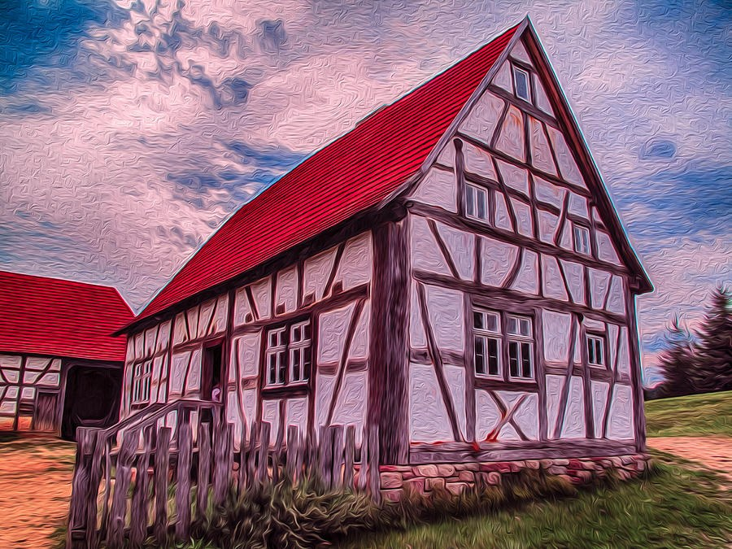
Red Roof Reverie, Half-Timbered HouseThe warm red, pink and tan tones and the storybook half-timbered house make a welcoming horizontal piece for a dining wall, where the bold roof shape reads easily from the table. The Quiet Cottage - Whitewashed Thatched CottageThe wide horizontal shape suits the wall above a sideboard or table, and the warm brown and beige tones with the storybook cottage give diners something easy to read and enjoy.
The Quiet Cottage - Whitewashed Thatched CottageThe wide horizontal shape suits the wall above a sideboard or table, and the warm brown and beige tones with the storybook cottage give diners something easy to read and enjoy.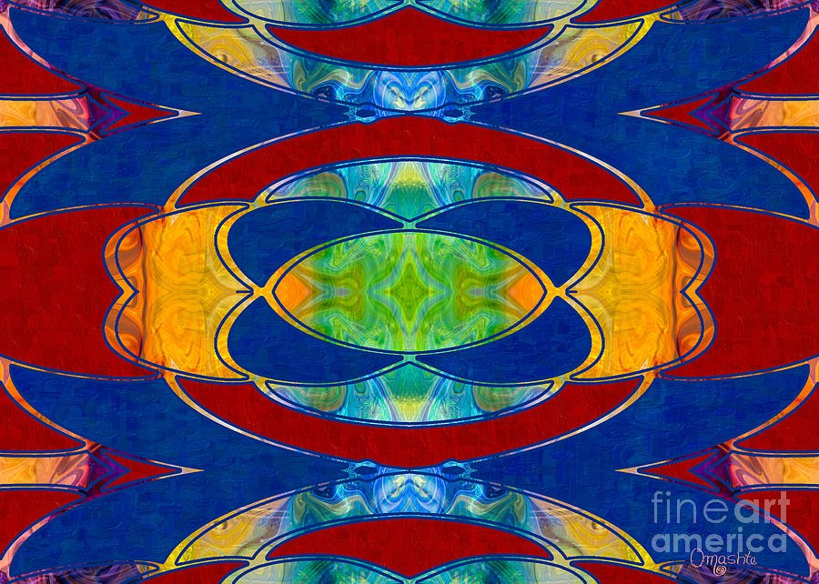
Emerald Window, Blue and Red Kaleidoscope AbstractThe jewel-bright blue, red, orange and gold-outlined shapes in strict mirrored symmetry suit a settled wall over a sideboard or table, where the eye can rest on the central green oval.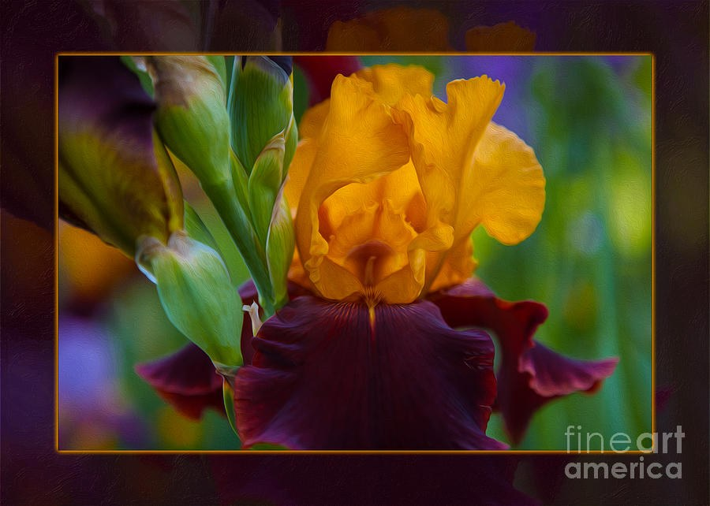
Wine and Gold, Bearded Iris Close-UpThe dark mat with its thin gold line and the wine-burgundy and gold-orange tones suit a buffet wall with brass or warm wood, giving a finished, collected look.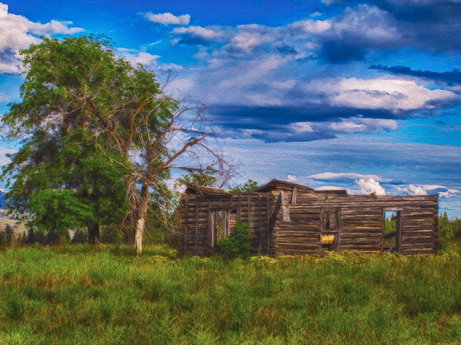
Open to the Sky: Roofless Log Cabin in Green MeadowThe broad horizontal landscape with its blue, green and weathered-brown contrast suits the wall above a buffet or sideboard in a farmhouse or rustic dining room, with a quiet, nostalgic mood that stays bright. Ember Mirror, Symmetrical Abstract in Orange and VioletThe warm ember-orange glow and deep violet-purple, set around a hazy central field, bring an ornate, dramatic presence to a dining room wall that can carry saturated color.
Ember Mirror, Symmetrical Abstract in Orange and VioletThe warm ember-orange glow and deep violet-purple, set around a hazy central field, bring an ornate, dramatic presence to a dining room wall that can carry saturated color. Lantern Oval, Mirrored Abstract in Gold, Blue and RedThe rich red and magenta border with a glowing gold-to-blue centre gives a dining wall a warm, saturated focal point, and the perfect mirror symmetry suits a wall centred over a sideboard or table.
Lantern Oval, Mirrored Abstract in Gold, Blue and RedThe rich red and magenta border with a glowing gold-to-blue centre gives a dining wall a warm, saturated focal point, and the perfect mirror symmetry suits a wall centred over a sideboard or table. Golden Whirlpools in Cobalt BlueThe glowing golden spirals against deep blue and the glossy, wet-looking pools give a dining wall rich color and plenty to look at while seated, in a horizontal shape that suits a wall over a sideboard or table.
Golden Whirlpools in Cobalt BlueThe glowing golden spirals against deep blue and the glossy, wet-looking pools give a dining wall rich color and plenty to look at while seated, in a horizontal shape that suits a wall over a sideboard or table. Ember Drift, Red and Gold Fluid AbstractThe ember-like reds, oranges and golds with a dark maroon surround give a dining wall a warm, dramatic, autumnal look, and the horizontal shape fits over a sideboard or buffet.
Ember Drift, Red and Gold Fluid AbstractThe ember-like reds, oranges and golds with a dark maroon surround give a dining wall a warm, dramatic, autumnal look, and the horizontal shape fits over a sideboard or buffet. Ember Leaf: White Linework Abstract in Rust and TealThe warm rust, gold and teal colour field with its stained-glass glow and intricate detail gives a dining wall something to hold the eye while people sit and look.
Ember Leaf: White Linework Abstract in Rust and TealThe warm rust, gold and teal colour field with its stained-glass glow and intricate detail gives a dining wall something to hold the eye while people sit and look. Rain Drop - Blue Bubble Splash on Brown and Gold SwirlsThe warm brown and gold field suits a sideboard or table wall, and the glossy blue, green, yellow and purple bubbles add a small cool contrast that guests can ask about.
Rain Drop - Blue Bubble Splash on Brown and Gold SwirlsThe warm brown and gold field suits a sideboard or table wall, and the glossy blue, green, yellow and purple bubbles add a small cool contrast that guests can ask about. The Turning Current, Blue and Peach Fluid AbstractThe horizontal shape fits above a sideboard or console, and the warm yellow and orange glow along the bottom edge gives a lit focal point against the cool blue and green field.
The Turning Current, Blue and Peach Fluid AbstractThe horizontal shape fits above a sideboard or console, and the warm yellow and orange glow along the bottom edge gives a lit focal point against the cool blue and green field.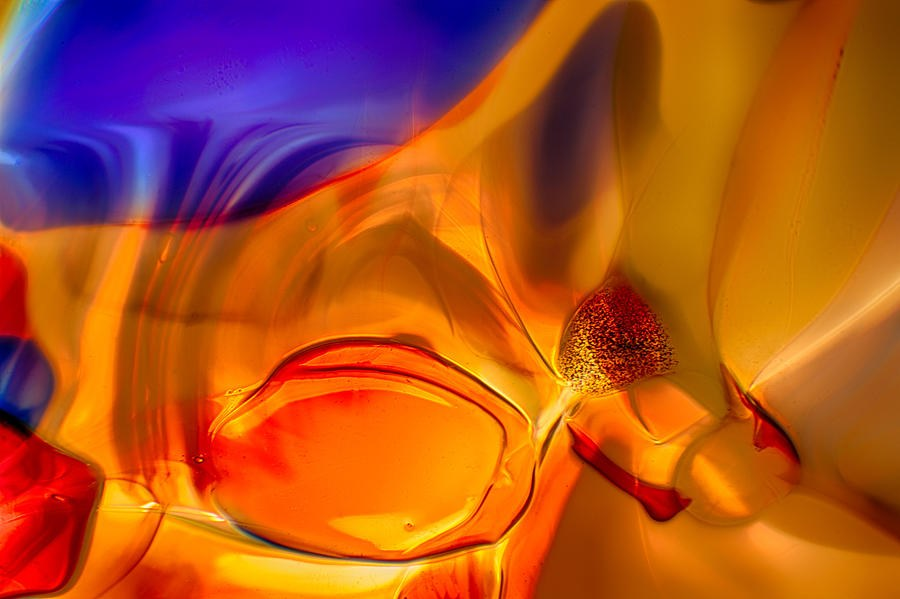
Ember and Dusk, Glowing Orange Glass AbstractThe backlit amber and gold glass and the saturated orange oval give a warm, glowing presence on a dining wall, and the cool blue-violet mass adds contrast against it. Electric Totem, Symmetrical Blue Swirl AbstractThe symmetrical horizontal layout works centered over a sideboard or dining wall, and the red and orange corner swirls against electric blue give the wall a vivid, conversation-starting focal point.
Electric Totem, Symmetrical Blue Swirl AbstractThe symmetrical horizontal layout works centered over a sideboard or dining wall, and the red and orange corner swirls against electric blue give the wall a vivid, conversation-starting focal point.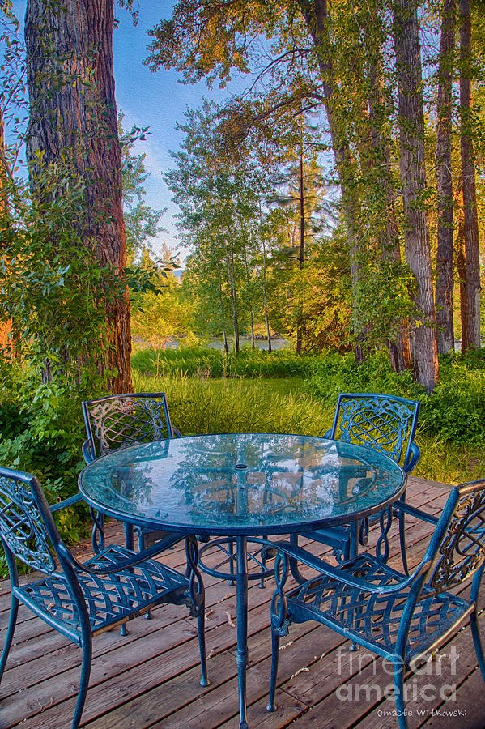
Cottonwood Cottage PatioA round table with four chairs on a deck echoes the idea of a shared meal, and the saturated blues, greens and golds give a dining wall a strong colour focus. Leaded Roses, Mirrored Red Blossoms AbstractThe glowing reds and heavy black stained-glass outlines make a dramatic, ordered statement on a dining wall, such as over a sideboard or console, where a rich colour suits the setting.
Leaded Roses, Mirrored Red Blossoms AbstractThe glowing reds and heavy black stained-glass outlines make a dramatic, ordered statement on a dining wall, such as over a sideboard or console, where a rich colour suits the setting. Marigold Mask, Mirrored Abstract in Green and RedThe bold green, red and yellow and the ornate swirled border give a sideboard or dining wall a confident, eye-catching piece with plenty of detail to look at over a meal.
Marigold Mask, Mirrored Abstract in Green and RedThe bold green, red and yellow and the ornate swirled border give a sideboard or dining wall a confident, eye-catching piece with plenty of detail to look at over a meal.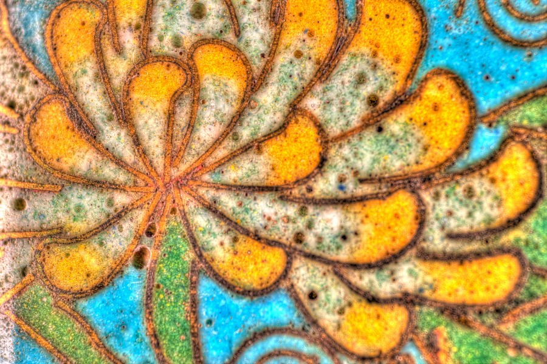
Amber Spiral, Close-Up Flower on TurquoiseThe glowing amber-orange petals against a bright turquoise ground add warmth over a sideboard or console, and the glossy, bubbled glaze-like surface rewards a closer look from the table. Lantern in the Blue - Glowing Gold Swirl AbstractThe backlit yellow-green and orange core with a warm red-orange flare along the right edge gives a dining wall a lit focal point, and the intricate blue swirls give guests something to look at.
Lantern in the Blue - Glowing Gold Swirl AbstractThe backlit yellow-green and orange core with a warm red-orange flare along the right edge gives a dining wall a lit focal point, and the intricate blue swirls give guests something to look at. Ember Window, Glowing Orange Swirl in a Black SquareThe ember-like orange and red center set in a black band and smoldering brown-red frame adds a warm, contained focal point over a sideboard or console, and the square format sits comfortably there.
Ember Window, Glowing Orange Swirl in a Black SquareThe ember-like orange and red center set in a black band and smoldering brown-red frame adds a warm, contained focal point over a sideboard or console, and the square format sits comfortably there.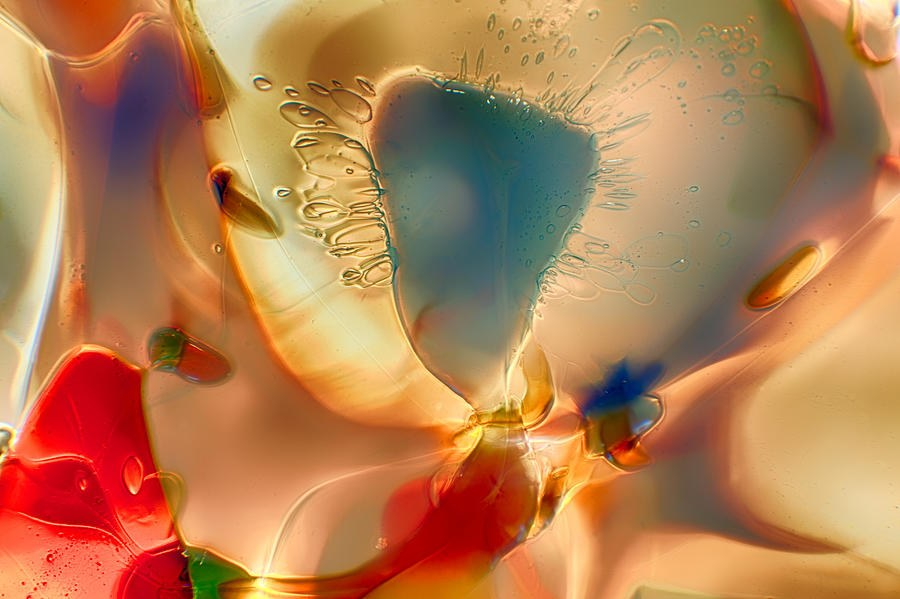
Ember Pool, Blue Teardrop in Glowing GlassThe warm backlit amber, cream and red glass with a cool teal centre gives a dining wall a glowing colour focus, and the fine bubble detail along the edges gives guests something to notice up close. Eyes in the Current, Black and White Pattern DrawingThe strong monochrome contrast and the wavy band of eye-like ovals give a dining room wall a detailed focal point without adding colour that competes with the table or surrounding decor.
Eyes in the Current, Black and White Pattern DrawingThe strong monochrome contrast and the wavy band of eye-like ovals give a dining room wall a detailed focal point without adding colour that competes with the table or surrounding decor. Garnet Jewel, Symmetrical Red, Gold and Purple AbstractThe warm crimson and golden yellow with a festive, ornamental feel suit a dining wall, and the even, flat light and symmetry keep it balanced when centered over a sideboard or table.
Garnet Jewel, Symmetrical Red, Gold and Purple AbstractThe warm crimson and golden yellow with a festive, ornamental feel suit a dining wall, and the even, flat light and symmetry keep it balanced when centered over a sideboard or table. The Gilded Seam, Pink and Peach Marbled AbstractThe warm peach, pink and gold palette and the roughly symmetrical horizontal layout suit a sideboard wall, where the detailed central V acts as a focal point.
The Gilded Seam, Pink and Peach Marbled AbstractThe warm peach, pink and gold palette and the roughly symmetrical horizontal layout suit a sideboard wall, where the detailed central V acts as a focal point. Amber Lantern, Mirrored Glowing OvalThe warm orange, gold and amber glow against near-black edges, together with the strict mirrored symmetry, gives a dining wall a rich, formal focal point, for example above a sideboard.
Amber Lantern, Mirrored Glowing OvalThe warm orange, gold and amber glow against near-black edges, together with the strict mirrored symmetry, gives a dining wall a rich, formal focal point, for example above a sideboard. Sunlit Ruffles, Yellow and Burgundy IrisThe rich pairing of yellow-gold and deep burgundy, with the veined velvety petal giving it visual weight, holds up on a wall from across the room.
Sunlit Ruffles, Yellow and Burgundy IrisThe rich pairing of yellow-gold and deep burgundy, with the veined velvety petal giving it visual weight, holds up on a wall from across the room. Spring Grove in MazamaThe wide horizontal shape fits above a sideboard, and the open meadow and light spring foliage give the wall a fresh, even-toned view that doesn't crowd the table.
Spring Grove in MazamaThe wide horizontal shape fits above a sideboard, and the open meadow and light spring foliage give the wall a fresh, even-toned view that doesn't crowd the table.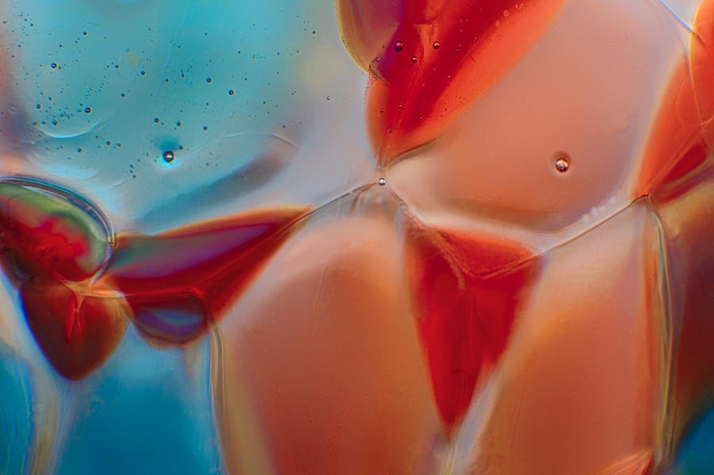
Ember Pools, Coral Cells on TurquoiseThe salmon-peach, coral and red cells glow against turquoise, so the piece brings a warm, color-led focal point to a dining wall or sideboard in a horizontal format.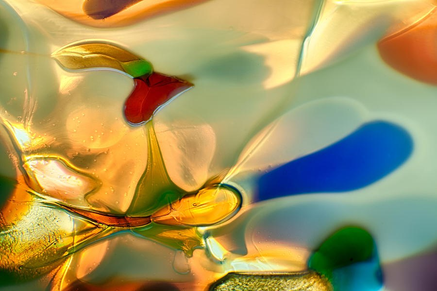
Cobalt Drift, Glowing Amber Glass AbstractBacklit amber and gold glass sit well over a buffet or sideboard in a horizontal format, and the cobalt blue, red and emerald accents give the eye places to travel across the table wall.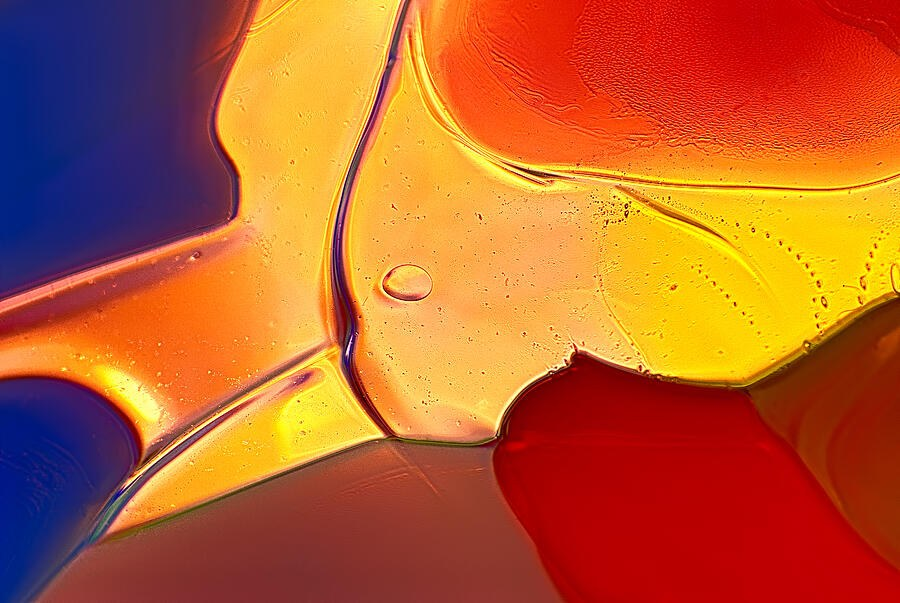
Ember Window, Glowing Yellow and Blue AbstractThe warm glowing yellows and oranges against deep blue and red give a horizontal wall over a sideboard or table a lit-from-behind focal point, with the small bubble giving the eye somewhere to land.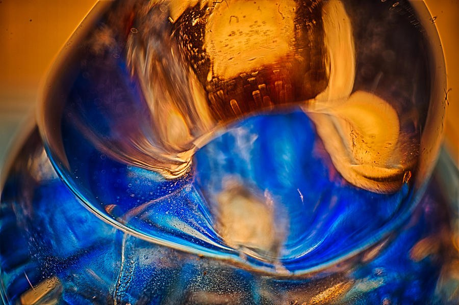
Cobalt Ember, Glass Close-Up AbstractThe horizontal format works over a sideboard, and the warm gold and amber highlights against deep blue give a rich, glossy focal point that picks up warm tones around a table.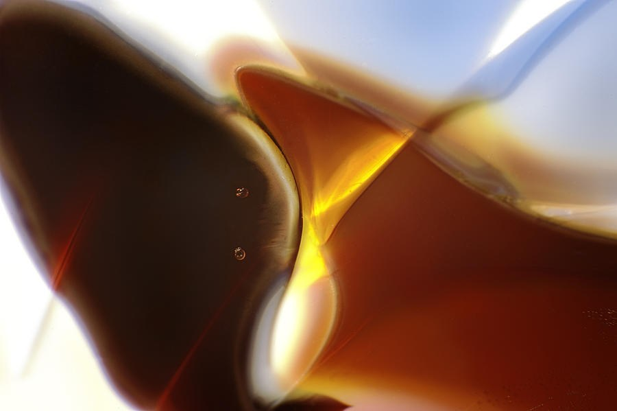
Ember Seam, Amber Glass AbstractThe deep brown and glowing amber read as a rich, warm palette that can sit over a sideboard or table wall, and the backlit glass surface gives guests something to look at closely. Turning Light, Black and White Spiral AbstractThe horizontal shape suits the wall above a buffet or sideboard, and the thick painterly texture and shadowed corners give a dining space a strong monochrome piece to look at.
Turning Light, Black and White Spiral AbstractThe horizontal shape suits the wall above a buffet or sideboard, and the thick painterly texture and shadowed corners give a dining space a strong monochrome piece to look at. Ember Halo, Glowing Oval KaleidoscopeThe warm orange, amber and gold glow of the oval ring suits a dining wall, and the horizontal, centered composition fits naturally over a sideboard or console.
Ember Halo, Glowing Oval KaleidoscopeThe warm orange, amber and gold glow of the oval ring suits a dining wall, and the horizontal, centered composition fits naturally over a sideboard or console.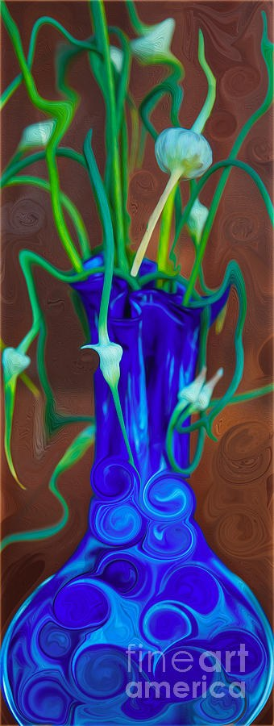
Cobalt Curl, Blue Vase with Looping Green StemsThe deep cobalt vase against warm brown with cream and white-green buds reads as a flower still life with strong colour, and its tall shape can fit a slim wall beside a sideboard or between two windows.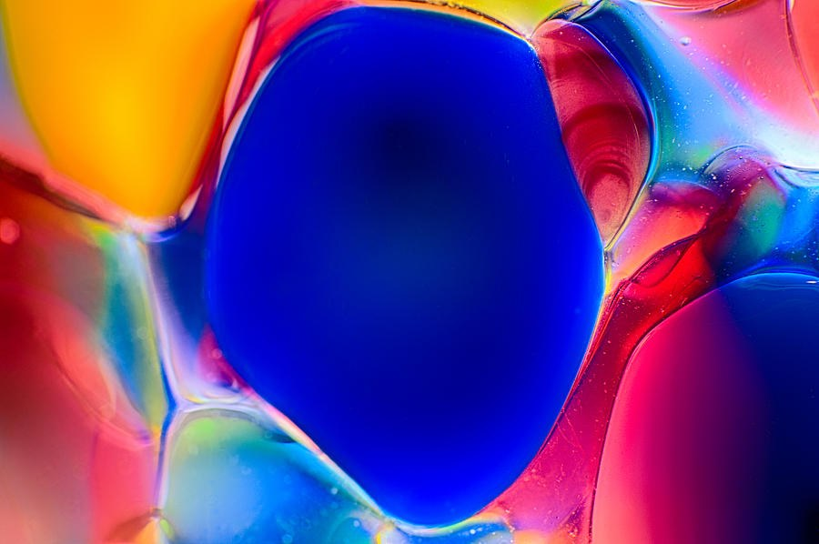
Cobalt Hearth, Blue Orb Abstract MacroThe jewel-like red, yellow and pink pockets glowing around the deep blue orb give a dining wall a rich, lit-from-behind focal point that holds attention across the room.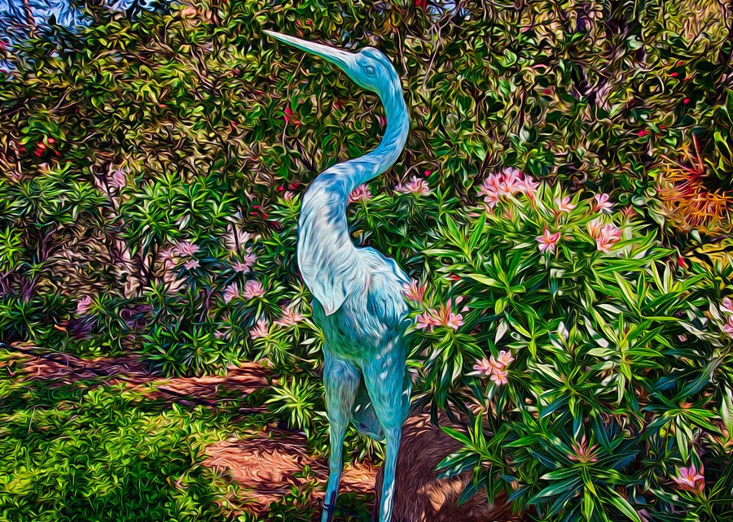
Heron in the Hawaiian GardenThe saturated greens, soft pink blossoms and rust-brown path give a sideboard wall a rich, abundant garden scene, with the upright bird as a single point of focus. Marigold Quartet, Four-Way Spiral AbstractThe warm glowing orange, the orderly mirrored layout and the small marbled brown ovals give a dining wall something to look at and a bold, balanced pattern to sit across from.
Marigold Quartet, Four-Way Spiral AbstractThe warm glowing orange, the orderly mirrored layout and the small marbled brown ovals give a dining wall something to look at and a bold, balanced pattern to sit across from. Ember Window: Red and Yellow Kaleidoscope ScrollsThe fiery red, orange and yellow glow of the backlit, stained-glass-style design gives a sideboard or dining wall a warm, graphic focal point that holds up at a distance.
Ember Window: Red and Yellow Kaleidoscope ScrollsThe fiery red, orange and yellow glow of the backlit, stained-glass-style design gives a sideboard or dining wall a warm, graphic focal point that holds up at a distance. Four Winged Heart, Blue and Red Kaleidoscope AbstractThe wide horizontal layout suits the wall above a sideboard, where the steady four-part symmetry and glowing orange center bring bold color to the table area.
Four Winged Heart, Blue and Red Kaleidoscope AbstractThe wide horizontal layout suits the wall above a sideboard, where the steady four-part symmetry and glowing orange center bring bold color to the table area.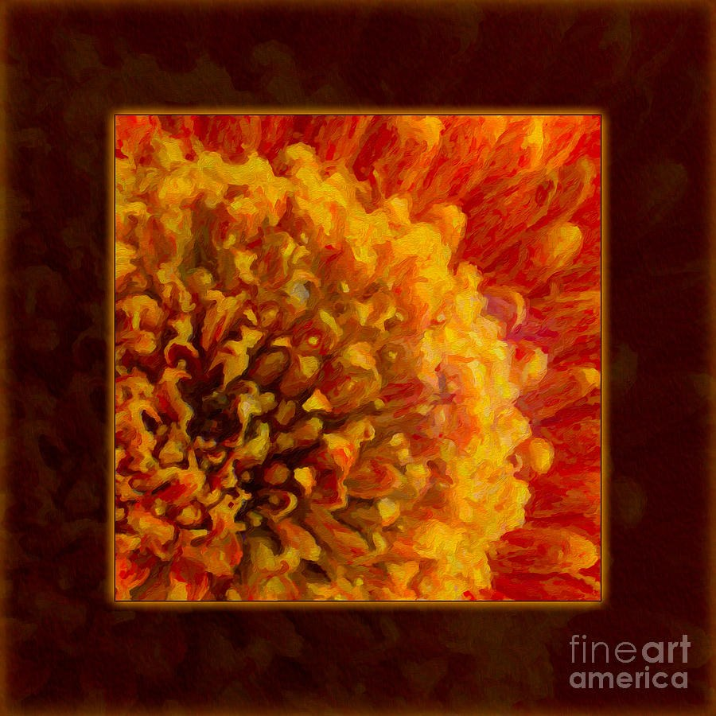
Ember Window, Orange and Gold Flower Close-UpThe glowing orange, gold and red petals set against deep brown give a warm, saturated focal point that suits a dining wall, whether hung alone or as one of a pair. Ember Wings - Mirrored Pink and Red AbstractThe warm reds, ambers and corals with a small jewel-like diamond at the center suit a dining wall over a sideboard, where the formal mirrored order holds the space.
Ember Wings - Mirrored Pink and Red AbstractThe warm reds, ambers and corals with a small jewel-like diamond at the center suit a dining wall over a sideboard, where the formal mirrored order holds the space. Heart of the Whirl: Teal Spirals Between Navy and FlameThe warm orange-red on one side against cool navy and teal gives a dining wall a bold, glowing focal point, and the many small whirls give the eye plenty to follow from the table.
Heart of the Whirl: Teal Spirals Between Navy and FlameThe warm orange-red on one side against cool navy and teal gives a dining wall a bold, glowing focal point, and the many small whirls give the eye plenty to follow from the table. Ember Window, Kaleidoscope Oval in Orange and BlueThe warm orange and red egg-shaped forms outlined in gold, set on deep blue and mirrored in a steady symmetry, give a sideboard or dining wall a jewel-like focal point.
Ember Window, Kaleidoscope Oval in Orange and BlueThe warm orange and red egg-shaped forms outlined in gold, set on deep blue and mirrored in a steady symmetry, give a sideboard or dining wall a jewel-like focal point.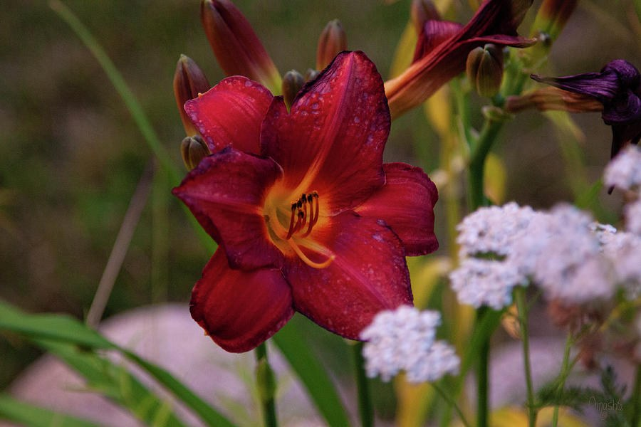
Crimson Daylily in the Methow GardenThe deep red and green palette with its dusky, low-lit mood suits a wall above a sideboard, where the horizontal format sits comfortably and the one strong colour gives the table area a confident accent.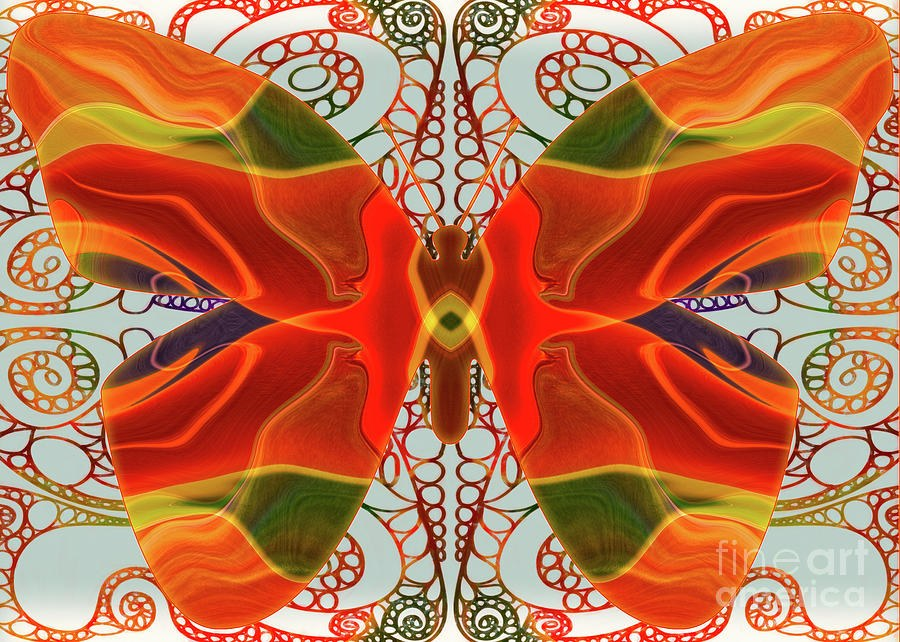
Ember Wings, Symmetrical Orange Butterfly in Lace FiligreeThe warm orange, red and olive palette and the lively, celebratory ornament suit a sideboard wall, where the mirror symmetry sits naturally over a centered piece of furniture.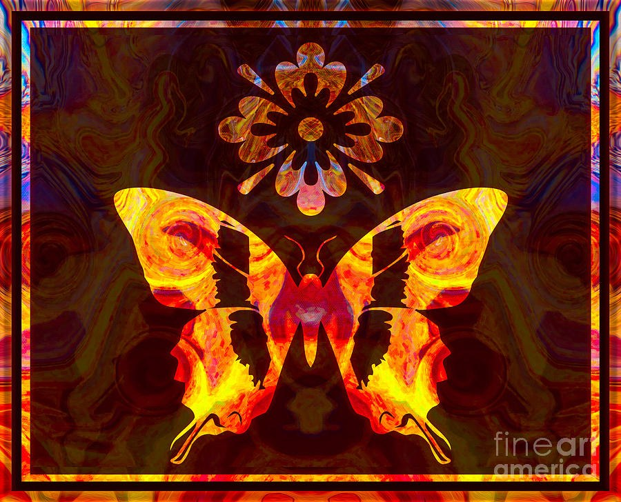
Ember Wings, Symmetrical ButterflyThe deep maroon-brown ground and fiery orange and gold tones give a dining wall a warm, rich colour accent, and the ornamental symmetry suits the formal order of a table setting. Ember Iris, Golden Bloom Aglow in DarknessThe warm golden and amber petals set against deep charcoal brown give a low-light dining wall a dramatic, intimate focal point, and the single bloom also works as a pair or trio.
Ember Iris, Golden Bloom Aglow in DarknessThe warm golden and amber petals set against deep charcoal brown give a low-light dining wall a dramatic, intimate focal point, and the single bloom also works as a pair or trio. Ember Wings: Mirrored Red and Gold AbstractThe warm red, orange and gold core with magenta and teal loops adds colour and presence to a centred dining wall, and the symmetry suits a table or console placed in the middle.
Ember Wings: Mirrored Red and Gold AbstractThe warm red, orange and gold core with magenta and teal loops adds colour and presence to a centred dining wall, and the symmetry suits a table or console placed in the middle. Ember Glow, Translucent Red Glass AbstractThe jewel-toned red and amber glass, lit as if from behind and cooled by teal and cobalt on the right, adds a warm, celebratory glow that suits a room built around gathering.
Ember Glow, Translucent Red Glass AbstractThe jewel-toned red and amber glass, lit as if from behind and cooled by teal and cobalt on the right, adds a warm, celebratory glow that suits a room built around gathering. Ember Chalice, Mirrored Marbled AbstractThe saturated jewel tones of teal, emerald, amber and red, with a warm glow rising from the bottom center, suit a room where a dramatic, ornate statement wall can be the focus over a sideboard.
Ember Chalice, Mirrored Marbled AbstractThe saturated jewel tones of teal, emerald, amber and red, with a warm glow rising from the bottom center, suit a room where a dramatic, ornate statement wall can be the focus over a sideboard.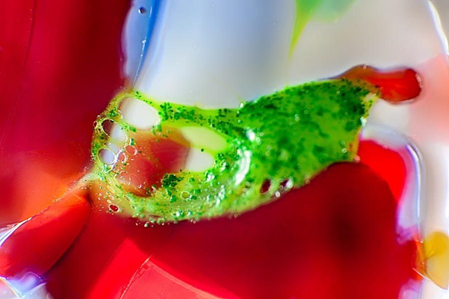
Green Crossing, Red and White Glass MacroThe saturated red and glowing glass highlights give a console or sideboard wall a bold, rich colour, and the horizontal format suits that kind of wall. Amber Glow, Mirrored Spiral AbstractIts horizontal shape suits the wall above a sideboard, and the backlit, stained-glass look of the amber and golden-yellow shapes against dark purple adds warmth and depth to a room where people sit and linger.
Amber Glow, Mirrored Spiral AbstractIts horizontal shape suits the wall above a sideboard, and the backlit, stained-glass look of the amber and golden-yellow shapes against dark purple adds warmth and depth to a room where people sit and linger. Blue Diamond Ember, Symmetrical Gold AbstractThe warm gold, yellow, green and red scrollwork with a strictly mirrored, ornamental layout suits a dining wall over a sideboard, where it supplies rich colour and a formal, ordered look.
Blue Diamond Ember, Symmetrical Gold AbstractThe warm gold, yellow, green and red scrollwork with a strictly mirrored, ornamental layout suits a dining wall over a sideboard, where it supplies rich colour and a formal, ordered look. Ember Crescents, Mirrored Abstract in Orange, Red and GoldThe warm, glowing stained-glass-like palette and strict four-way symmetry suit a dining wall, where the speckled, marbled and fabric-like surfaces can be enjoyed up close at the table.
Ember Crescents, Mirrored Abstract in Orange, Red and GoldThe warm, glowing stained-glass-like palette and strict four-way symmetry suit a dining wall, where the speckled, marbled and fabric-like surfaces can be enjoyed up close at the table. Carnival Mirror - Magenta Kaleidoscope OvalThe mirrored, carnival-like symmetry and the glowing red and magenta palette suit a dining wall where a vivid, eye-catching piece can be the focal point.
Carnival Mirror - Magenta Kaleidoscope OvalThe mirrored, carnival-like symmetry and the glowing red and magenta palette suit a dining wall where a vivid, eye-catching piece can be the focal point. Ember Window, Red and Yellow Swirling AbstractThe warm flame-like reds and oranges with cool teal touches, held inside a dark built-in mat, give a dining wall a rich focal point that suits deep or neutral wall colours.
Ember Window, Red and Yellow Swirling AbstractThe warm flame-like reds and oranges with cool teal touches, held inside a dark built-in mat, give a dining wall a rich focal point that suits deep or neutral wall colours.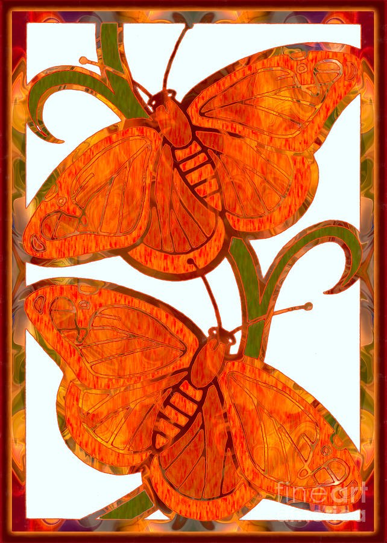
Ember Wings, Two Orange ButterfliesThe glowing, backlit-looking orange wings and the rich red and amber ornate border bring warmth to a dining wall, especially against a neutral or deep-toned wall or beside a window.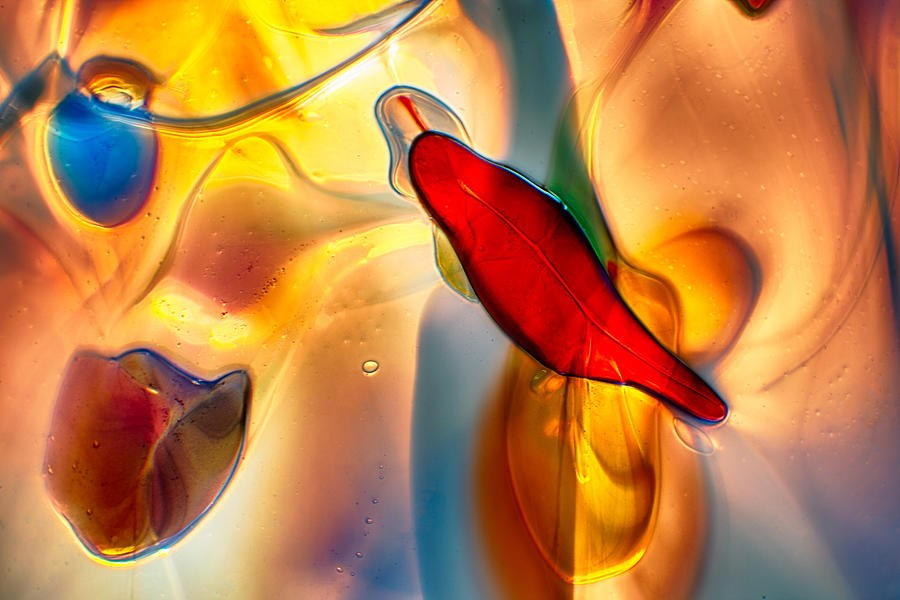
Ember Drift, Glowing Red AbstractThe backlit red, gold and amber tones and glossy, glass-like surfaces bring warm color and glow to a dining wall, with fine bubbles and hairlines for guests to look at up close. Ember and Lilac Pools - Translucent Color AbstractWarm amber, terracotta and crimson pooled like backlit liquid give a dining buffet or wall a glowing focal point without any recognizable subject.
Ember and Lilac Pools - Translucent Color AbstractWarm amber, terracotta and crimson pooled like backlit liquid give a dining buffet or wall a glowing focal point without any recognizable subject. Ember Lantern, Mirrored Red and Orange AbstractThe ordered, ornamental mirror pattern in warm red, orange and yellow gives a dining wall a striking vertical focal point, for example above a sideboard.
Ember Lantern, Mirrored Red and Orange AbstractThe ordered, ornamental mirror pattern in warm red, orange and yellow gives a dining wall a striking vertical focal point, for example above a sideboard. Lit From Within, Purple Stained Glass AbstractThe mirrored central column and symmetry sit comfortably over a sideboard or at the end of a table, and the rich yellow, orange and blue cells against deep purple add warmth and colour at mealtimes.
Lit From Within, Purple Stained Glass AbstractThe mirrored central column and symmetry sit comfortably over a sideboard or at the end of a table, and the rich yellow, orange and blue cells against deep purple add warmth and colour at mealtimes.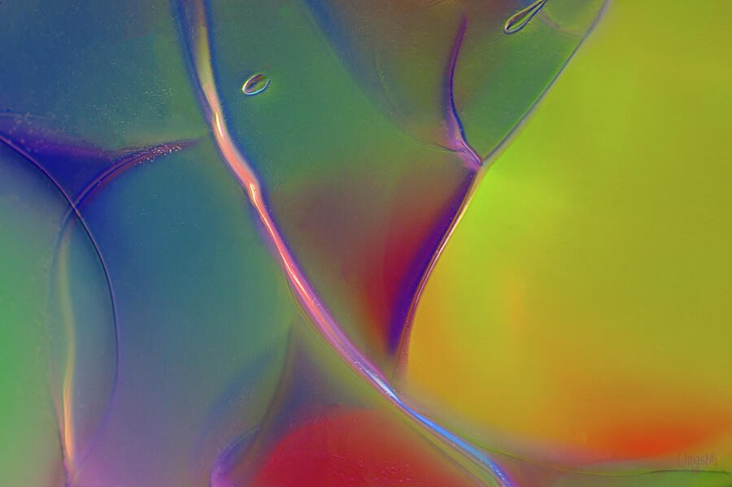
Thread of Light, Green and Yellow Abstract MacroThe horizontal shape suits a sideboard wall, and the saturated yet gentle blue, green and yellow gradients with a red-orange glow at the base add warmth and colour above the table setting. Ember Tide - Glowing Blue-Rimmed OvalThe deep dark surround and the luminous red, orange and blue oval suit a moodier room, where its horizontal shape can hold a wall over a sideboard or console as one focal image.
Ember Tide - Glowing Blue-Rimmed OvalThe deep dark surround and the luminous red, orange and blue oval suit a moodier room, where its horizontal shape can hold a wall over a sideboard or console as one focal image. Methow River ShallowsThe wide horizontal frame works over a sideboard or console, and the earthy olive, tan and rust stone tones sit comfortably with wood furniture.
Methow River ShallowsThe wide horizontal frame works over a sideboard or console, and the earthy olive, tan and rust stone tones sit comfortably with wood furniture. Veils Above, Painterly Clouds Over EvergreensThe wide horizontal shape fits above a sideboard, and the textured oil-paint finish reads as a painting from across the room while the blue and navy pair with neutral walls.
Veils Above, Painterly Clouds Over EvergreensThe wide horizontal shape fits above a sideboard, and the textured oil-paint finish reads as a painting from across the room while the blue and navy pair with neutral walls. Methow Valley Clouds in Blue and WhiteThe wide horizontal shape suits a wall above a sideboard, where the saturated blue sky and swirled, painterly clouds add colour and texture.
Methow Valley Clouds in Blue and WhiteThe wide horizontal shape suits a wall above a sideboard, where the saturated blue sky and swirled, painterly clouds add colour and texture. Blue Arch, Mirrored Swirling AbstractThe mirrored composition sits squarely over a sideboard or console, and the glowing, backlit-looking orange, red and green add warmth and colour to a settled dining wall.
Blue Arch, Mirrored Swirling AbstractThe mirrored composition sits squarely over a sideboard or console, and the glowing, backlit-looking orange, red and green add warmth and colour to a settled dining wall.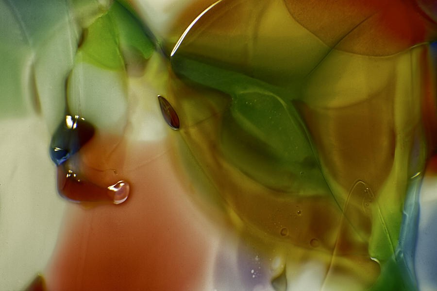
Amber Seed, Close-Up of Green and Rust GlassThe warm amber, rust-red and cream fields with a touch of green fit a horizontal wall over a sideboard, adding colour to the room without depicting anything literal.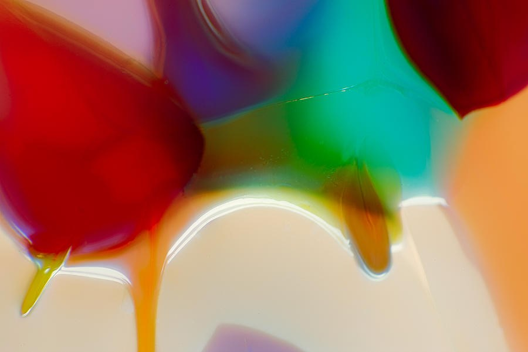
Ruby Thaw: Red and Teal Glass AbstractThe jewel-toned red, teal and burgundy with glowing amber drips and glossy white highlights suit a sideboard or long dining wall, and the horizontal shape fits that run. Lantern Drift - Purple Teardrop AbstractThe saturated, glowing colour zones separated by thin gold lines give a dining wall or sideboard a warm, vivid presence that stays lively without becoming busy.
Lantern Drift - Purple Teardrop AbstractThe saturated, glowing colour zones separated by thin gold lines give a dining wall or sideboard a warm, vivid presence that stays lively without becoming busy. Amber Lantern, Abstract Glass Close-UpThe horizontal frame fits over a dining table or sideboard, and the glowing amber and red-orange tones with the glossy, stained-glass-like colour give the wall a warm focal point.
Amber Lantern, Abstract Glass Close-UpThe horizontal frame fits over a dining table or sideboard, and the glowing amber and red-orange tones with the glossy, stained-glass-like colour give the wall a warm focal point.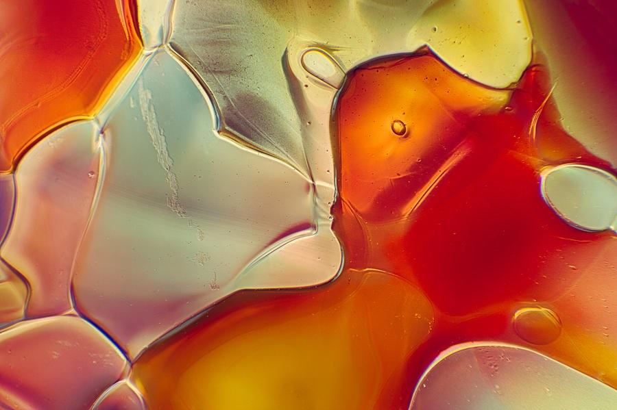
Ember Cells, Red and Orange Abstract MacroThe saturated red and orange cells look lit from behind, so over a sideboard or at the end of a table the piece adds a warm, luminous colour field that suits a room built around gathering. Ember Heart in a Leaf WreathThe burnt orange, crimson and amber field with its dark wreath has a ceremonial, celebratory feel that suits a wall where people gather, such as above a sideboard.
Ember Heart in a Leaf WreathThe burnt orange, crimson and amber field with its dark wreath has a ceremonial, celebratory feel that suits a wall where people gather, such as above a sideboard. Golden Windows, Mirrored Scroll AbstractThe perfectly mirrored symmetry and dark green border suit a formal, balanced placement over a sideboard, while the glowing purple, orange and yellow glass-like panels add rich colour to the room.
Golden Windows, Mirrored Scroll AbstractThe perfectly mirrored symmetry and dark green border suit a formal, balanced placement over a sideboard, while the glowing purple, orange and yellow glass-like panels add rich colour to the room. Ember Glow, Mirrored Swirls in Blue and OrangeThe symmetrical, ornate scrollwork suits a wide wall above a buffet or sideboard, where the orange and yellow carry across the room and the deep blue top and bottom act like a frame.
Ember Glow, Mirrored Swirls in Blue and OrangeThe symmetrical, ornate scrollwork suits a wide wall above a buffet or sideboard, where the orange and yellow carry across the room and the deep blue top and bottom act like a frame. Crimson Lantern, Mirrored Abstract in Red and YellowThe warm red, orange and yellow palette with its balanced quadrant layout gives a dining wall a strong colour focus, and the mask-like teal and orange forms give guests something to look at longer.
Crimson Lantern, Mirrored Abstract in Red and YellowThe warm red, orange and yellow palette with its balanced quadrant layout gives a dining wall a strong colour focus, and the mask-like teal and orange forms give guests something to look at longer.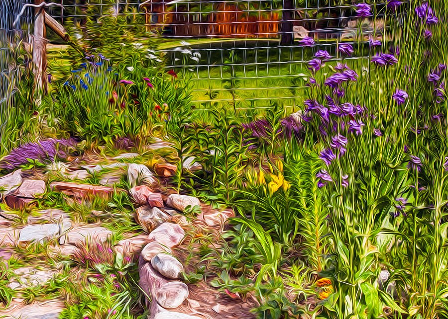
Methow Valley Garden Path in Purple and GreenThe wide horizontal frame fits over a sideboard, and the winding stone path with the violet blooms gives diners something to follow into the scene, with its smooth oil-paint finish. Ember Petals, Yellow Flower on Navy BlueThe dramatic warm glow of the swirling petals against the dark blue ground suits a buffet or dining wall that wants a bold flower picture rather than a soft pastel one.
Ember Petals, Yellow Flower on Navy BlueThe dramatic warm glow of the swirling petals against the dark blue ground suits a buffet or dining wall that wants a bold flower picture rather than a soft pastel one.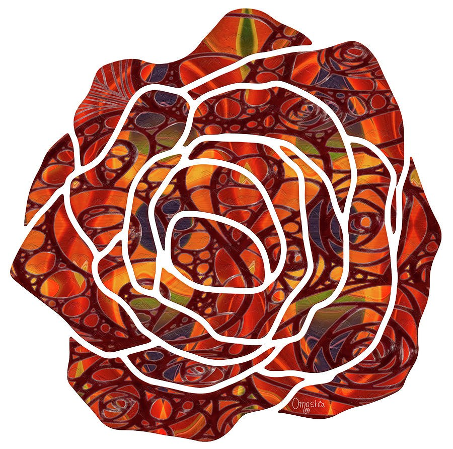
Ember Spiral Rose in Stained Glass PatternThe fiery orange and maroon palette and the glowing, stained-glass-like detail give a dining wall one bold, decorative image that rewards close looking while people sit at the table. Ruffled Tide, Turquoise and Red Fluid AbstractThe hot red, orange and yellow currents around the cool turquoise centre give a dining wall a bold, colour-led piece in a horizontal shape that suits a wall behind a table or sideboard.
Ruffled Tide, Turquoise and Red Fluid AbstractThe hot red, orange and yellow currents around the cool turquoise centre give a dining wall a bold, colour-led piece in a horizontal shape that suits a wall behind a table or sideboard. Ember Constellation, Glowing Stars in Red and Green Liquid ColorThe lively red, forest green and cream palette with its luminous white star shapes gives a dining wall a vivid, festive colour presence without needing any particular meaning.
Ember Constellation, Glowing Stars in Red and Green Liquid ColorThe lively red, forest green and cream palette with its luminous white star shapes gives a dining wall a vivid, festive colour presence without needing any particular meaning. Facing Embers - Mirrored Orange and Red AbstractThe fiery orange, red and deep maroon palette with golden yellow highlights gives a horizontal wall above a sideboard or table a warm, dramatic, backlit look.
Facing Embers - Mirrored Orange and Red AbstractThe fiery orange, red and deep maroon palette with golden yellow highlights gives a horizontal wall above a sideboard or table a warm, dramatic, backlit look. Ember Window, Orange Gerbera DaisyThe fiery orange, red and gold tones with a deep red-brown border bring warmth to a sideboard or dining wall, and the two views of the same bloom give people something to look at across the table.
Ember Window, Orange Gerbera DaisyThe fiery orange, red and gold tones with a deep red-brown border bring warmth to a sideboard or dining wall, and the two views of the same bloom give people something to look at across the table.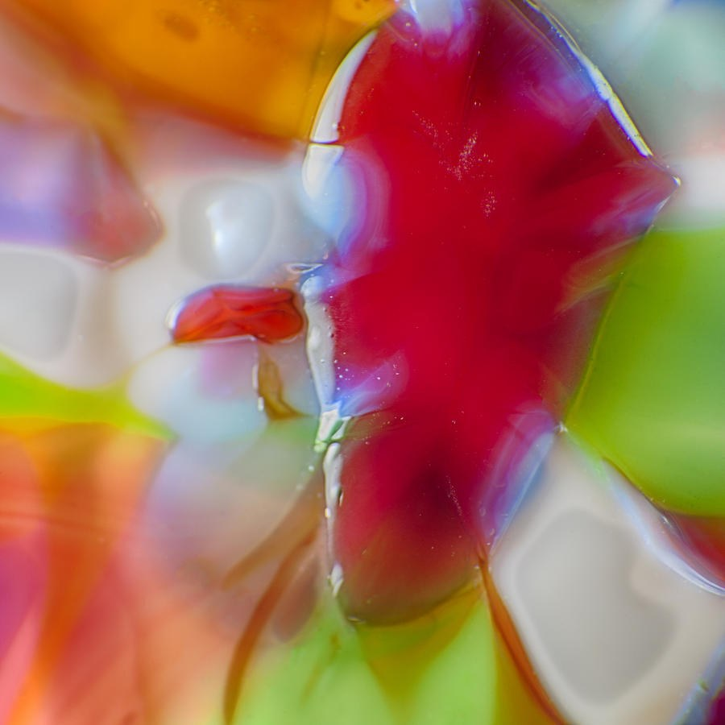
Crimson Petal - Red Glass Close-UpThe deep crimson with orange and lime-green glass gives a dining wall a warm, vivid focal point, and the glowing highlights along the glass edges add lively detail without a busy subject. Ember Mirror: Symmetrical Red AbstractThe deep reds and glowing orange-yellow center bring warmth and a ceremonial, balanced presence to a dining wall above a sideboard or console, where the horizontal shape fits the line of the furniture.
Ember Mirror: Symmetrical Red AbstractThe deep reds and glowing orange-yellow center bring warmth and a ceremonial, balanced presence to a dining wall above a sideboard or console, where the horizontal shape fits the line of the furniture. Ember Wings, Symmetrical Red and Teal AbstractThe wide, centred, symmetrical layout suits the wall over a sideboard, where the glowing teal, gold and red curls give guests something to stop and look at.
Ember Wings, Symmetrical Red and Teal AbstractThe wide, centred, symmetrical layout suits the wall over a sideboard, where the glowing teal, gold and red curls give guests something to stop and look at. Ember Totem, Mirrored Red-Orange AbstractThe warm red, orange and yellow bands against deep green suit the wall above a sideboard, where the horizontal, centred composition sits naturally and gives the room a lively focal point.
Ember Totem, Mirrored Red-Orange AbstractThe warm red, orange and yellow bands against deep green suit the wall above a sideboard, where the horizontal, centred composition sits naturally and gives the room a lively focal point.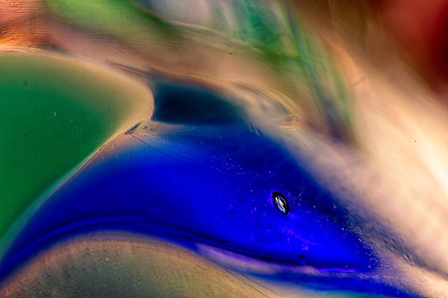
One Small Bubble - Cobalt Blue Glass AbstractThe wide horizontal format suits the wall above a sideboard, where the glowing blue arch and warm peach and rust gradients can be the room's focal colour.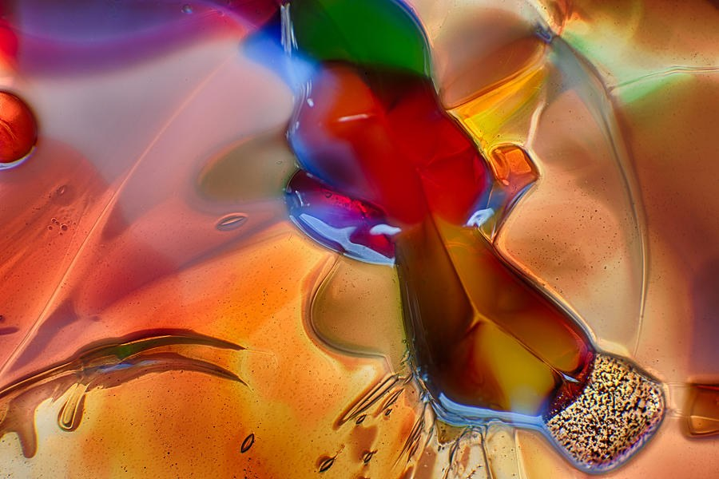
Ruby Ember Current, Glowing Glass AbstractThe jewel-like red, green and amber glow and the warm orange field suit a dining wall or sideboard, where the color adds richness to the room. Blue Crossing: Mirrored Stained Glass Style AbstractThe wide, symmetrical layout suits the wall above a sideboard, and the lime-green cross against deep navy adds a crisp, ordered pattern to look at over a meal.
Blue Crossing: Mirrored Stained Glass Style AbstractThe wide, symmetrical layout suits the wall above a sideboard, and the lime-green cross against deep navy adds a crisp, ordered pattern to look at over a meal. Ember Window: Orange and Blue Stained-Glass Style AbstractThe warm orange rings, cool blue pebbles and deep green border make a colour-first, symmetrical piece that can hold one wall in a room where people sit facing it.
Ember Window: Orange and Blue Stained-Glass Style AbstractThe warm orange rings, cool blue pebbles and deep green border make a colour-first, symmetrical piece that can hold one wall in a room where people sit facing it. Amber Lantern, Mirrored Gold and Brown AbstractThe warm golds and deep browns with a backlit, stained-glass glow suit a wall over a sideboard or console, where the centered symmetry gives the table area a balanced focal point.
Amber Lantern, Mirrored Gold and Brown AbstractThe warm golds and deep browns with a backlit, stained-glass glow suit a wall over a sideboard or console, where the centered symmetry gives the table area a balanced focal point.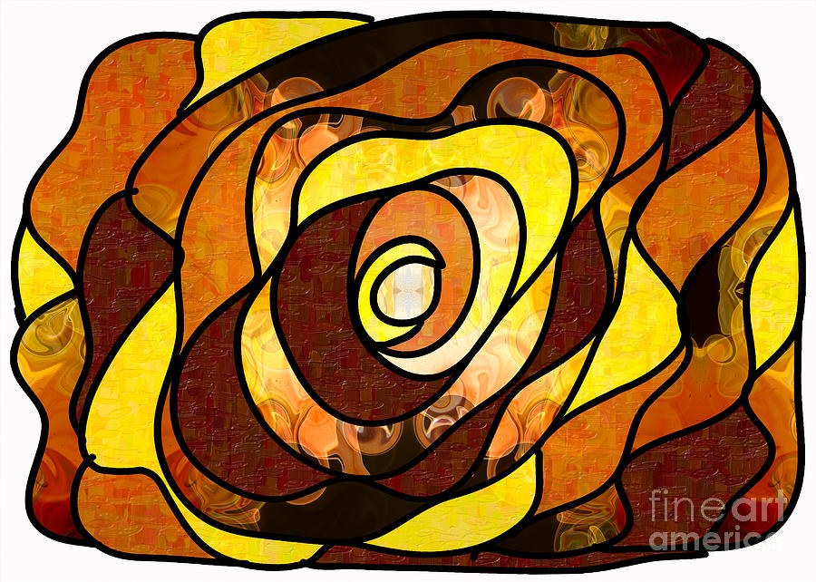
Amber Spiral, Stained Glass Style RoseThe glowing amber and cream center with deep brown petals gives a warm, stained-glass look that suits a wall beside or behind a dining table.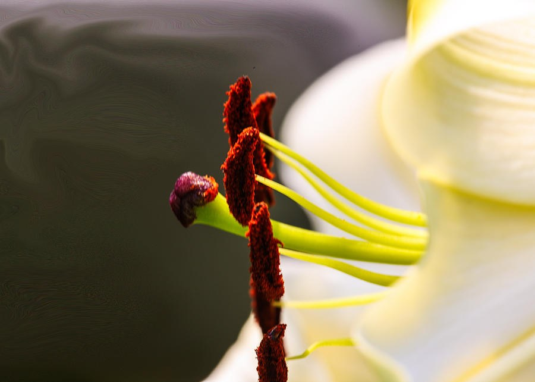
Rust and Lime, Lily Stamens Close-UpThe horizontal frame suits a sideboard or console wall, and the warm cream glow set against rust-red and lime-green gives a dramatic floral that works with warm woods. Ember Coneflowers and Lilac BloomsThe deep forest green background and glowing red coneflowers suit a wall above a buffet, where the horizontal shape and warm-against-cool lilac contrast add rich color to the table setting.
Ember Coneflowers and Lilac BloomsThe deep forest green background and glowing red coneflowers suit a wall above a buffet, where the horizontal shape and warm-against-cool lilac contrast add rich color to the table setting.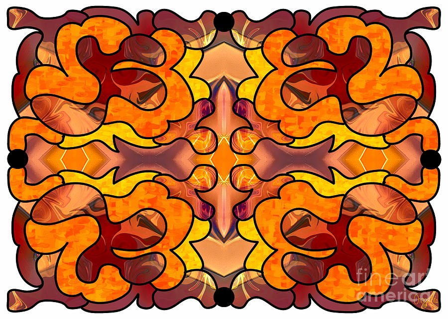
Ember Window, Mirrored Orange AbstractThe warm, fiery palette and the ornate, mirrored stained-glass pattern give a dining wall above a sideboard or console a bold, ordered centrepiece with plenty to look at. Molten Eye, Orange and Navy AbstractThe backlit orange and pink glow against absorbing dark shapes gives a dining wall a warm, intense centerpiece, and the eye-like oval gives people at the table somewhere to rest their gaze.
Molten Eye, Orange and Navy AbstractThe backlit orange and pink glow against absorbing dark shapes gives a dining wall a warm, intense centerpiece, and the eye-like oval gives people at the table somewhere to rest their gaze.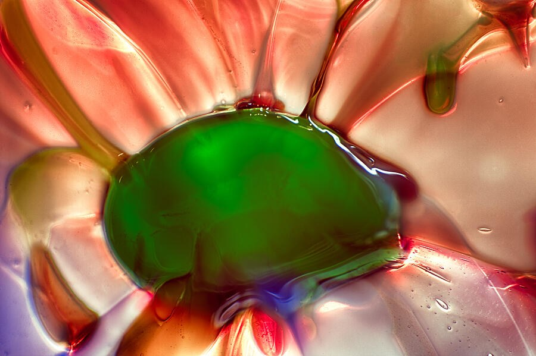
Emerald Lantern, Glowing Green and Coral AbstractThe horizontal frame suits the wall above a buffet or sideboard, and the glossy, backlit-looking coral, pink and green give the dining wall a rich, warm colour contrast. Ember Window, Swirling Green and Gold AbstractThe glowing green and gold swirls with ember-orange edges give a dining wall a warm focal point, and the horizontal shape suits the wall above a sideboard or table.
Ember Window, Swirling Green and Gold AbstractThe glowing green and gold swirls with ember-orange edges give a dining wall a warm focal point, and the horizontal shape suits the wall above a sideboard or table. Ember Ovals, Speckled Forms in Molten GoldThe amber, brown and gold palette with touches of olive green and deep red sits well on a dining wall behind a sideboard, where the glossy highlights and grainy oval textures reward a closer look.
Ember Ovals, Speckled Forms in Molten GoldThe amber, brown and gold palette with touches of olive green and deep red sits well on a dining wall behind a sideboard, where the glossy highlights and grainy oval textures reward a closer look. Four-Way Window: Maroon and Green Mirrored AbstractThe warm maroon, cream and amber border and the mirrored, rhythmic pattern give a dining sideboard wall a saturated, stained-glass-like focal point in a horizontal format.
Four-Way Window: Maroon and Green Mirrored AbstractThe warm maroon, cream and amber border and the mirrored, rhythmic pattern give a dining sideboard wall a saturated, stained-glass-like focal point in a horizontal format. Ember Mask, Symmetrical Flame AbstractThe warm amber and gold glow with its ornamental, symmetrical structure gives a dining wall a formal presence, and the dark centre adds weight against a lighter wall.
Ember Mask, Symmetrical Flame AbstractThe warm amber and gold glow with its ornamental, symmetrical structure gives a dining wall a formal presence, and the dark centre adds weight against a lighter wall. Mirrored Embers, Symmetrical Orange and Red AbstractThe warm gold, amber and orange palette and the ordered mirror symmetry give a dining wall a strong centerpiece that sits comfortably over a sideboard and gives guests something to look at and talk about.
Mirrored Embers, Symmetrical Orange and Red AbstractThe warm gold, amber and orange palette and the ordered mirror symmetry give a dining wall a strong centerpiece that sits comfortably over a sideboard and gives guests something to look at and talk about. Amber Lantern, Mirrored Abstract in Orange, Blue and PurpleThe balanced, mirrored layout and warm orange-amber centre framed by deep purple suit a sideboard or dining wall that wants one colourful, centred statement.
Amber Lantern, Mirrored Abstract in Orange, Blue and PurpleThe balanced, mirrored layout and warm orange-amber centre framed by deep purple suit a sideboard or dining wall that wants one colourful, centred statement. Ember Bloom: Orange and Turquoise KaleidoscopeThe warm orange, gold and lime green swirls in exact mirror symmetry make a bold, deliberate colour statement on a sideboard or dining wall, with fine marbled detail to reward a closer look.
Ember Bloom: Orange and Turquoise KaleidoscopeThe warm orange, gold and lime green swirls in exact mirror symmetry make a bold, deliberate colour statement on a sideboard or dining wall, with fine marbled detail to reward a closer look. Ember Window, Orange and Red Mirrored Scroll AbstractThe four-way mirror symmetry and ornamental, stained-glass look suit a sideboard or buffet wall, where the fiery glow and golden border add a formal, warm accent.
Ember Window, Orange and Red Mirrored Scroll AbstractThe four-way mirror symmetry and ornamental, stained-glass look suit a sideboard or buffet wall, where the fiery glow and golden border add a formal, warm accent. Ember Lily, Glowing Orange-Yellow LilyThe warm yellow and orange petals rising out of a dark green ground give a rich, focused single-bloom piece for a dining wall, such as over a sideboard, where the dark background anchors the colour.
Ember Lily, Glowing Orange-Yellow LilyThe warm yellow and orange petals rising out of a dark green ground give a rich, focused single-bloom piece for a dining wall, such as over a sideboard, where the dark background anchors the colour. Ember Windows, Black Ribbon AbstractThe black loops open into window-like gaps of glowing orange, amber and violet, giving a dining wall a dramatic, high-contrast focal point with plenty of movement for the eye to follow.
Ember Windows, Black Ribbon AbstractThe black loops open into window-like gaps of glowing orange, amber and violet, giving a dining wall a dramatic, high-contrast focal point with plenty of movement for the eye to follow.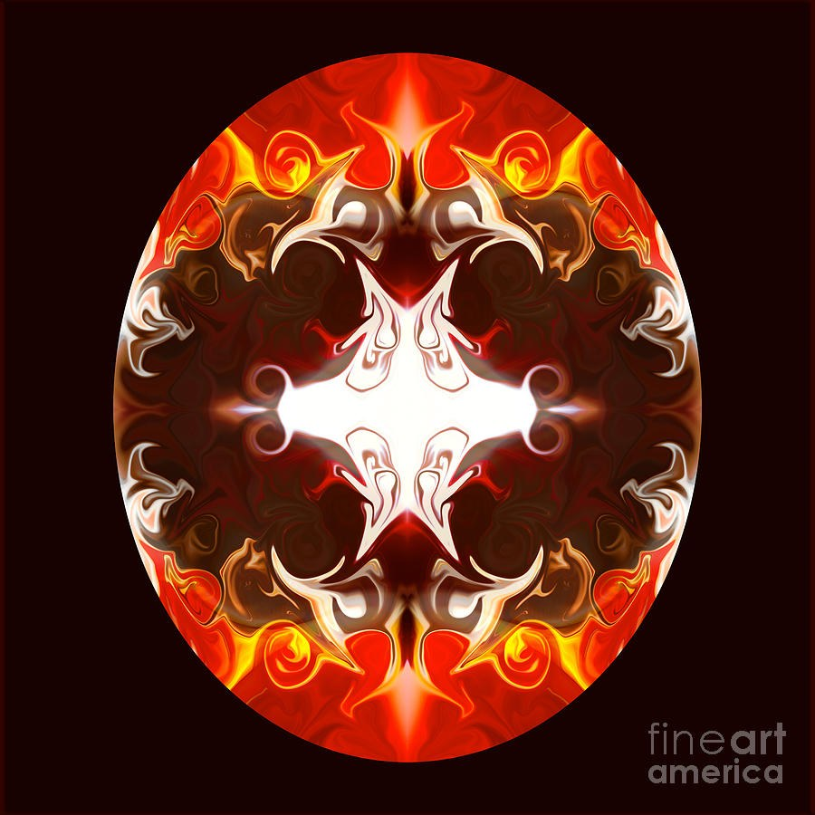
Ember Wing - Kaleidoscope Flame AbstractThe warm reds, oranges and browns around a bright central glow give a dining wall a strong centered focal point, and the four-way symmetry keeps it orderly over a sideboard or console.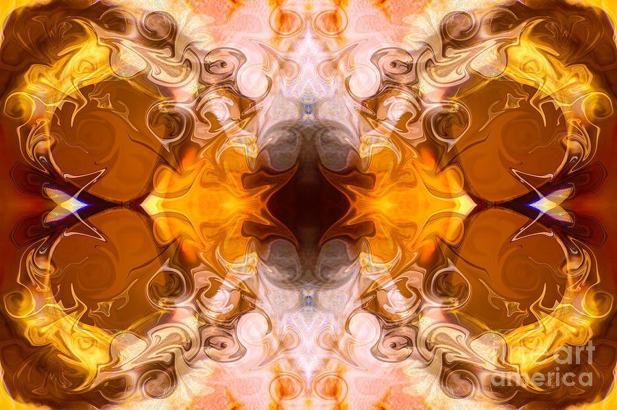
Amber Mask, Kaleidoscope Abstract in Gold and BrownThe balanced, mirrored composition suits a formal centred wall above a sideboard, and the glowing amber and gold curls bring warmth to the table setting. Ember Window, Four Mirrored ScrollsThe deep green border, burgundy and golden tones and fully mirrored ornamental pattern suit a sideboard or buffet wall where a defined, decorative centerpiece reads well.
Ember Window, Four Mirrored ScrollsThe deep green border, burgundy and golden tones and fully mirrored ornamental pattern suit a sideboard or buffet wall where a defined, decorative centerpiece reads well. Ember Seam, Glowing Red and Teal AbstractThe jewel-toned red, orange and teal with a lit-from-within, glassy glow gives a dining wall a vivid, warm centrepiece that suits a compact or mid-size space.
Ember Seam, Glowing Red and Teal AbstractThe jewel-toned red, orange and teal with a lit-from-within, glassy glow gives a dining wall a vivid, warm centrepiece that suits a compact or mid-size space. Twin Embers, Mirrored Orange and Red AbstractThe warm, fire-coloured orange and red field with two matching blue mask-like centres gives a long dining-room wall a bold focal point that reads from across the table.
Twin Embers, Mirrored Orange and Red AbstractThe warm, fire-coloured orange and red field with two matching blue mask-like centres gives a long dining-room wall a bold focal point that reads from across the table.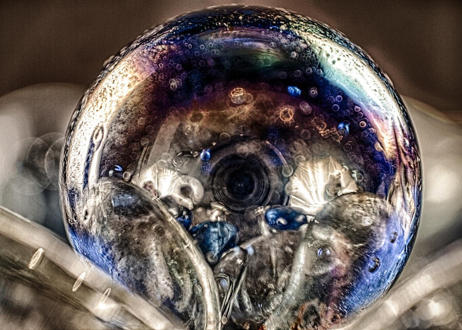
Indigo Eye, Iridescent Glass OrbThe jewel-toned indigo, copper and amber iridescence in a moody, glossy horizontal image gives a dining wall a dark, detailed focal piece to look into. Ice Meets Ember - Blue and Orange Swirl AbstractThe glossy, luminous orange-red half and the cool turquoise half make a vivid focal point on a dining wall, and the repeating swirls give the eye plenty to follow across the seam while people sit at the table.
Ice Meets Ember - Blue and Orange Swirl AbstractThe glossy, luminous orange-red half and the cool turquoise half make a vivid focal point on a dining wall, and the repeating swirls give the eye plenty to follow across the seam while people sit at the table. Four Embers, Mirrored Spiral Abstract in Purple and RedThe warm red and orange centers, gold and yellow accents and the crisp stained-glass-style outlines give a horizontal piece that works over a sideboard or console, with marbled ring detail to look at up close.
Four Embers, Mirrored Spiral Abstract in Purple and RedThe warm red and orange centers, gold and yellow accents and the crisp stained-glass-style outlines give a horizontal piece that works over a sideboard or console, with marbled ring detail to look at up close.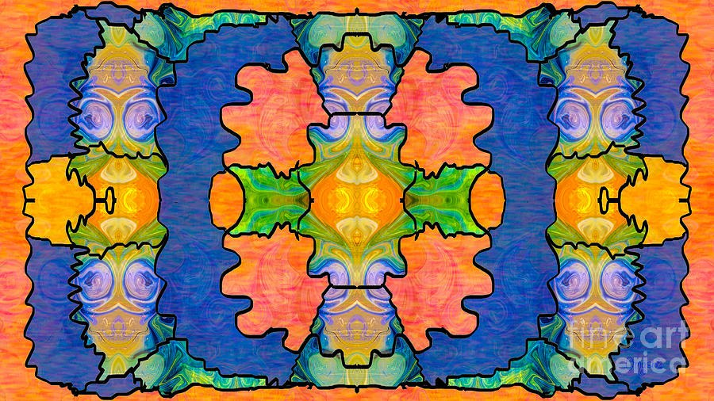
Mirror Masks, Blue and Orange Symmetrical AbstractThe symmetrical, formal layout and saturated blue and orange suit a wall above a buffet or sideboard, where the crisp black outlines and glowing marbled colour give guests something to keep looking at. Ember Current, Orange and Amber SwirlsThe rich, saturated orange, amber and red-orange tones with a pale cream flare give a dining wall a warm, glowing centre of attention, and the fine spirals reward a closer look from the table.
Ember Current, Orange and Amber SwirlsThe rich, saturated orange, amber and red-orange tones with a pale cream flare give a dining wall a warm, glowing centre of attention, and the fine spirals reward a closer look from the table. Ember Diamond, Mirrored Red AbstractThe glowing red and orange fields and the balanced, mirrored swirls give a dining wall a warm centrepiece that rewards a longer look across the table.
Ember Diamond, Mirrored Red AbstractThe glowing red and orange fields and the balanced, mirrored swirls give a dining wall a warm centrepiece that rewards a longer look across the table. Ember Axis, Symmetrical Red AbstractWarm, rich reds with golden outlines suit a dining wall or sideboard, and the mirrored balance gives the room a strong centre without looking busy.
Ember Axis, Symmetrical Red AbstractWarm, rich reds with golden outlines suit a dining wall or sideboard, and the mirrored balance gives the room a strong centre without looking busy.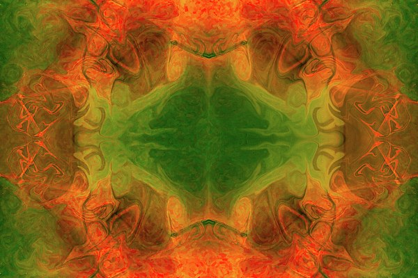
Ember Mask - Mirrored Orange and Green AbstractThe warm saturated orange and red swirls and the clear central mask-like form give a dining wall over a sideboard or console a focal point, and the fine red lacework at the edges rewards a longer look at the table. Ember Wings, Mirrored Red and Yellow AbstractThe formal, ornate mirrored composition suits a wall centred over a sideboard or table, and its warm reds, corals and yellows add a rich focal point.
Ember Wings, Mirrored Red and Yellow AbstractThe formal, ornate mirrored composition suits a wall centred over a sideboard or table, and its warm reds, corals and yellows add a rich focal point. Ember Mirror, Symmetrical Orange AbstractThe warm, fire-bright orange and gold on a deep blue and black ground give a dining wall a confident, high-contrast focal piece, and the balanced symmetry keeps it steady rather than busy.
Ember Mirror, Symmetrical Orange AbstractThe warm, fire-bright orange and gold on a deep blue and black ground give a dining wall a confident, high-contrast focal piece, and the balanced symmetry keeps it steady rather than busy.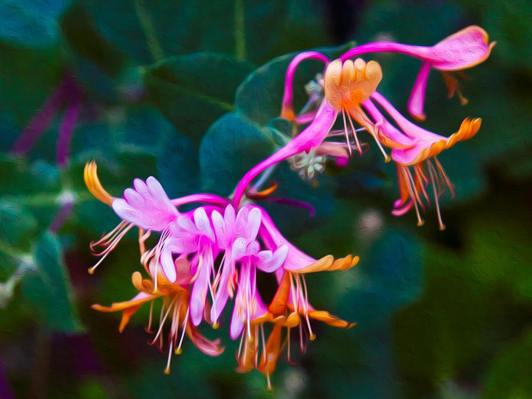
Lanterns in the Leaves, Pink and Orange Flower StudyThe saturated pink and orange flowers set against a dark, muted ground make a vivid focal point over a sideboard, and the fine trailing stamens reward a longer look. Magenta Mirrorwork, Symmetrical Pink AbstractThe four-way mirror symmetry suits a balanced, formal wall above a sideboard or console, where the saturated pink and ornamental scrolls give the room real colour and reward a closer look.
Magenta Mirrorwork, Symmetrical Pink AbstractThe four-way mirror symmetry suits a balanced, formal wall above a sideboard or console, where the saturated pink and ornamental scrolls give the room real colour and reward a closer look. Gilded Current, Rippled Gold AbstractThe glowing gold and bronze surface with its crisp, dense detail gives a warm dining wall something to look at, and the horizontal shape suits the wall above a sideboard or console.
Gilded Current, Rippled Gold AbstractThe glowing gold and bronze surface with its crisp, dense detail gives a warm dining wall something to look at, and the horizontal shape suits the wall above a sideboard or console. Ember Tide, Rust Form in Swirling Blue and GoldThe warm rust-brown centre framed by glowing yellow and deep blue makes a bold focal point over a sideboard, with small leaf, star and winged silhouettes that reward a closer look.
Ember Tide, Rust Form in Swirling Blue and GoldThe warm rust-brown centre framed by glowing yellow and deep blue makes a bold focal point over a sideboard, with small leaf, star and winged silhouettes that reward a closer look. Ember Tide, Swirling Orange and Blue AbstractThe rich deep red, amber and orange tones set against dark navy give a dining wall a dramatic, warm-lit look that suits a horizontal piece over a sideboard or buffet.
Ember Tide, Swirling Orange and Blue AbstractThe rich deep red, amber and orange tones set against dark navy give a dining wall a dramatic, warm-lit look that suits a horizontal piece over a sideboard or buffet.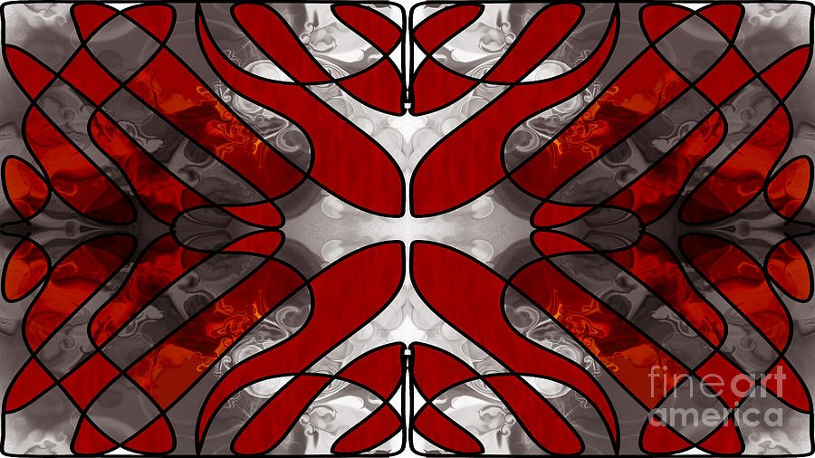
Ember Window, Red and Black Stained-Glass Style AbstractThe bold red with a pale glowing center reads like backlit stained glass, and its strict symmetry suits a centred spot over a sideboard or console where one strong colour can lead the room. The Indigo Pool: Mirrored Gold Spiral AbstractThe square, centered, ornamental layout with its blue and golden vine-patterned frames reads as a deliberate panel on a dining wall, and the gold and deep red tones pair with warm wood and brass fittings.
The Indigo Pool: Mirrored Gold Spiral AbstractThe square, centered, ornamental layout with its blue and golden vine-patterned frames reads as a deliberate panel on a dining wall, and the gold and deep red tones pair with warm wood and brass fittings. Ember Tide, Swirling Fluid Abstract in Red and GreenThe full-bleed field of warm reds, browns and emerald green with a bright cream mass at the bottom centre suits a dining wall or the space above a sideboard, where a wide horizontal piece has room to be seen.
Ember Tide, Swirling Fluid Abstract in Red and GreenThe full-bleed field of warm reds, browns and emerald green with a bright cream mass at the bottom centre suits a dining wall or the space above a sideboard, where a wide horizontal piece has room to be seen. Ember Medallion, Symmetrical Orange AbstractThe strict four-way mirror symmetry and glowing flame-like colour suit a room where a formal, ornate piece can sit on a wall and add heat to the table setting.
Ember Medallion, Symmetrical Orange AbstractThe strict four-way mirror symmetry and glowing flame-like colour suit a room where a formal, ornate piece can sit on a wall and add heat to the table setting.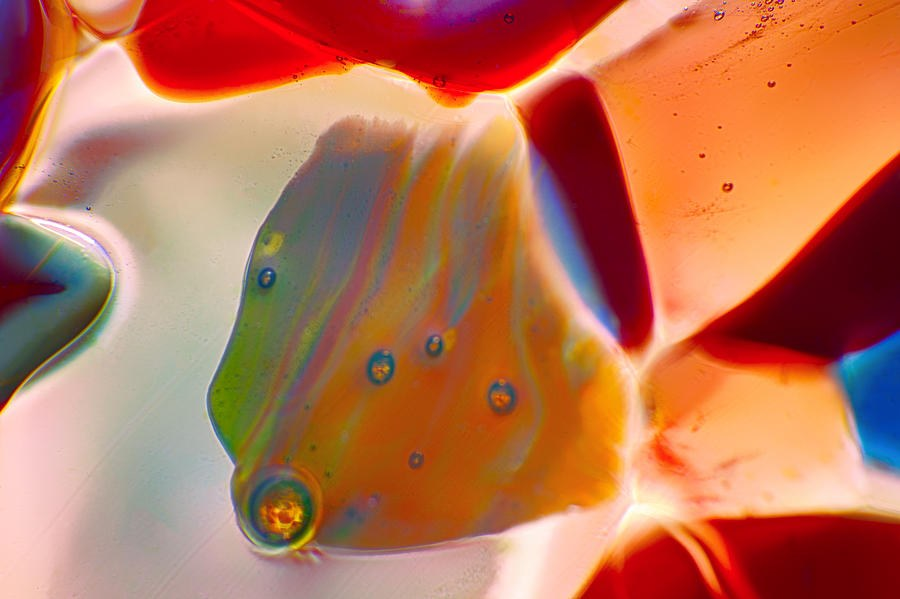
Ember Lantern, Glowing Orange Abstract with BubblesThe warm orange, amber and crimson tones with a backlit, stained-glass glow suit a dining wall, where a horizontal piece can hang above a sideboard or table. Blue Into Red, Glowing AbstractThe glowing olive-and-amber band between the cool blue and hot red suits the wall above a buffet or dining table, with the fine beaded droplets and red ridges rewarding a closer look.
Blue Into Red, Glowing AbstractThe glowing olive-and-amber band between the cool blue and hot red suits the wall above a buffet or dining table, with the fine beaded droplets and red ridges rewarding a closer look.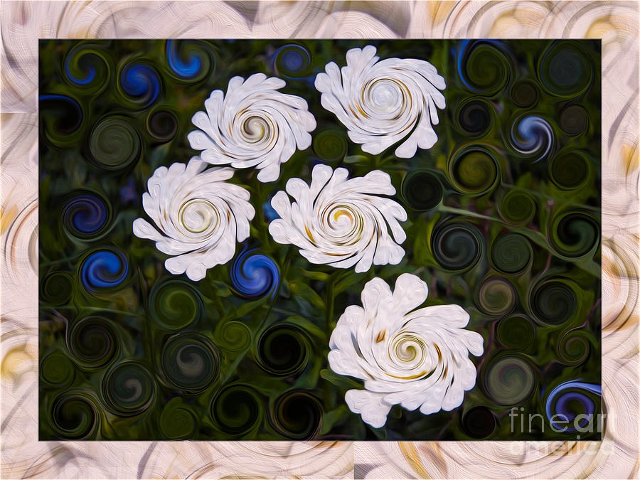
Whirling Blooms, White Spiral Flowers on Dark GreenThe five spiraling white flowers across a dark green field, with small blue accents, make a lively horizontal piece for a dining wall or sideboard for someone who wants flowers without a soft pastel look. Ember Heart, Swirled Amber FlameThe high contrast between the luminous flame and the dark brown surround gives an evening dining space a warm, dramatic accent that holds attention on a single wall.
Ember Heart, Swirled Amber FlameThe high contrast between the luminous flame and the dark brown surround gives an evening dining space a warm, dramatic accent that holds attention on a single wall. Molten Arc, Swirling Fluid Abstract in Blue and OrangeThe horizontal layout and the glowing yellow, orange and green against deep blue suit a dining buffet or wall, where the two sharp white accents give the eye a place to rest.
Molten Arc, Swirling Fluid Abstract in Blue and OrangeThe horizontal layout and the glowing yellow, orange and green against deep blue suit a dining buffet or wall, where the two sharp white accents give the eye a place to rest. Ember Mask - Mirrored Red and Olive AbstractThe warm red and olive-gold palette and the formal left-right symmetry suit a dining wall over a sideboard or table, where the face-like figure in the centre gives guests something to find on a second look.
Ember Mask - Mirrored Red and Olive AbstractThe warm red and olive-gold palette and the formal left-right symmetry suit a dining wall over a sideboard or table, where the face-like figure in the centre gives guests something to find on a second look. Amber Mirror, Glowing Orange Oval AbstractThe amber and gold glow and the ornamental, ordered patterning make a warm, formal-looking centrepiece on a centred wall, where the stacked mask-like motifs give people something to look at again.
Amber Mirror, Glowing Orange Oval AbstractThe amber and gold glow and the ornamental, ordered patterning make a warm, formal-looking centrepiece on a centred wall, where the stacked mask-like motifs give people something to look at again. Jewel Pool, Glowing Translucent AbstractThe horizontal, edge-to-edge glow of backlit-glass color, with warm reds and oranges on the right balanced by teal and green on the left, suits a buffet or dining wall where a vibrant, joyful piece is wanted.
Jewel Pool, Glowing Translucent AbstractThe horizontal, edge-to-edge glow of backlit-glass color, with warm reds and oranges on the right balanced by teal and green on the left, suits a buffet or dining wall where a vibrant, joyful piece is wanted. Methow River Bend at Hotel Rio VistaThe long horizontal composition fits a dining wall or sideboard, and the warm sun on the treetops against cool shade adds depth without a busy pattern.
Methow River Bend at Hotel Rio VistaThe long horizontal composition fits a dining wall or sideboard, and the warm sun on the treetops against cool shade adds depth without a busy pattern. Across the Ribbon, Blue and Orange Fluid AbstractThe horizontal layout fits over a sideboard, and the warm orange-yellow set against cool blue-teal across a glowing ribbon gives a table full of people something to look at and find a face in.
Across the Ribbon, Blue and Orange Fluid AbstractThe horizontal layout fits over a sideboard, and the warm orange-yellow set against cool blue-teal across a glowing ribbon gives a table full of people something to look at and find a face in. Ember Mask - Mirrored Orange and Navy AbstractThe strict mirror symmetry suits a centred spot over a sideboard or console, and the warm, inner-lit swirls set against deep navy and green add colour and a ceremonial balance to a dining wall.
Ember Mask - Mirrored Orange and Navy AbstractThe strict mirror symmetry suits a centred spot over a sideboard or console, and the warm, inner-lit swirls set against deep navy and green add colour and a ceremonial balance to a dining wall.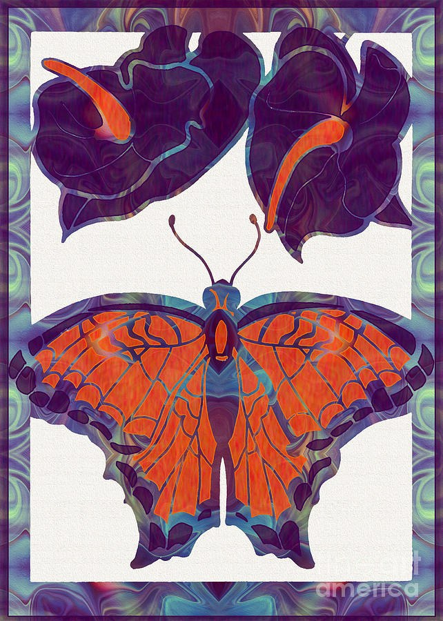
Tangerine Wings, Orange Butterfly with Purple BloomsThe decorative, stained-glass-like drawing with its swirled teal and purple border works as a colour statement above a sideboard or console, and its mirrored layout would let it hang as one of a pair. Golden Current: Fluid Abstract in Yellow and CobaltThe warm yellows, golds and brown shadows with a single vivid blue accent give a dining wall a bold, glossy focus for the table.
Golden Current: Fluid Abstract in Yellow and CobaltThe warm yellows, golds and brown shadows with a single vivid blue accent give a dining wall a bold, glossy focus for the table.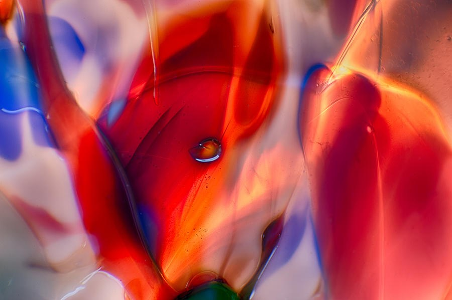
Ember Bubble, Red Glass MacroThe saturated crimson and orange glow, softened by blue and lavender at the edges, brings a rich warm colour to a sideboard or dining wall, and the horizontal frame suits that wide, low placement.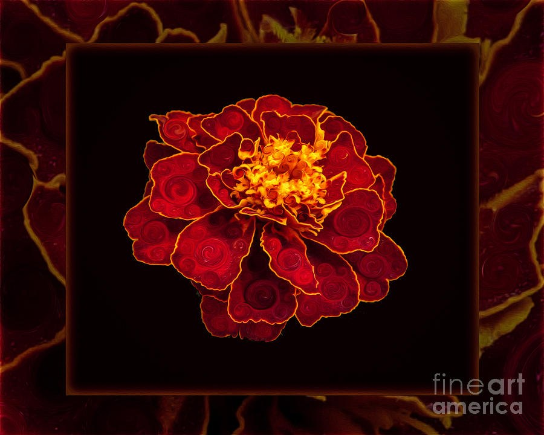
Ember Bloom, Red and Gold Flower on BlackThe deep black ground with glowing red, orange and gold petals gives a dining-room sideboard wall a single strong focal point, and the built-in dark border makes it look finished without a separate mat. Crimson Quartet - Mirrored Floral PatternThe balanced mirrored composition is easy to centre over a sideboard or table wall, and the warm orange and crimson with a deep blue border give the room a bold, folk-art-flavoured presence.
Crimson Quartet - Mirrored Floral PatternThe balanced mirrored composition is easy to centre over a sideboard or table wall, and the warm orange and crimson with a deep blue border give the room a bold, folk-art-flavoured presence. Golden Keyholes, Mirrored Amber AbstractThe warm amber-to-crimson glow and the rhythmic symmetry make a rich focal point on a vertical stretch of dining room wall, such as beside a sideboard or between windows.
Golden Keyholes, Mirrored Amber AbstractThe warm amber-to-crimson glow and the rhythmic symmetry make a rich focal point on a vertical stretch of dining room wall, such as beside a sideboard or between windows. Ember in the Green: Orange Teardrop AbstractThe horizontal shape fits over a sideboard or console, and the glossy wet-looking sheen with warm orange against cool green gives the wall one clear focal point without crowding the room.
Ember in the Green: Orange Teardrop AbstractThe horizontal shape fits over a sideboard or console, and the glossy wet-looking sheen with warm orange against cool green gives the wall one clear focal point without crowding the room. Lantern Irises, Yellow Bearded IrisThe buttery yellow blooms glowing against a muted, painterly backdrop add a warm, atmospheric garden note to a dining wall without being loud.
Lantern Irises, Yellow Bearded IrisThe buttery yellow blooms glowing against a muted, painterly backdrop add a warm, atmospheric garden note to a dining wall without being loud.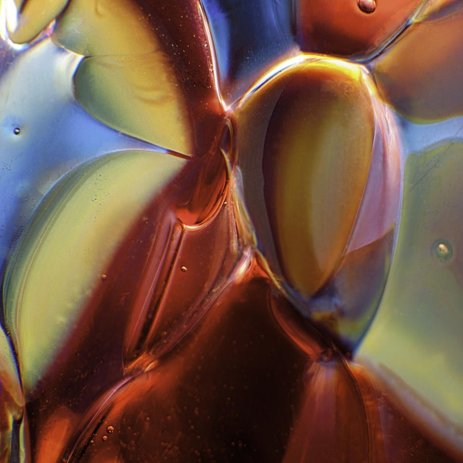
Ember Lantern: Glowing Amber Oval in Burgundy and BlueThe warm burgundy, mahogany and amber palette with a stained-glass-like glow suits a dining room, where the glossy lobes and tiny trapped bubbles reward long looking. Ember Current, Orange and Red Swirls Over BlueThe glowing orange-yellow and red ribbons against deep cobalt blue bring a dramatic, fiery warmth to a dining wall, and the dark mat holds the colour like a lit window.
Ember Current, Orange and Red Swirls Over BlueThe glowing orange-yellow and red ribbons against deep cobalt blue bring a dramatic, fiery warmth to a dining wall, and the dark mat holds the colour like a lit window. Lilac Masquerade, Mirrored AbstractThe horizontal, symmetrical layout sits naturally over a sideboard or console, and the lilac, olive green and burnt orange scrolls add a bold, ornamental focal point to the room.
Lilac Masquerade, Mirrored AbstractThe horizontal, symmetrical layout sits naturally over a sideboard or console, and the lilac, olive green and burnt orange scrolls add a bold, ornamental focal point to the room.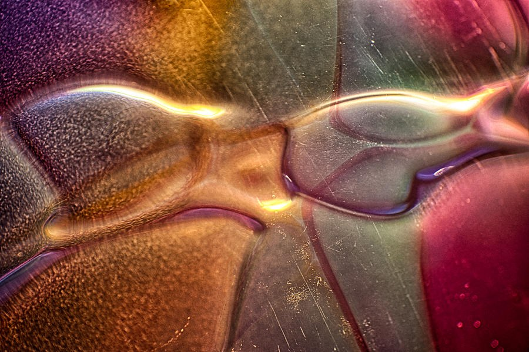
Golden Thread, Jewel-Toned Abstract Close-UpThe jewel-toned amber, burgundy and magenta cells with glowing gold highlights look like stained glass on a wall over a sideboard, and the soft, moody surroundings suit a room used in the evening. Sunmask, Mirrored Yellow FlowersThe saturated yellow, teal and touches of orange and magenta pink read as a lively, playful statement over a sideboard or table, with the creature-like center giving guests something to talk about.
Sunmask, Mirrored Yellow FlowersThe saturated yellow, teal and touches of orange and magenta pink read as a lively, playful statement over a sideboard or table, with the creature-like center giving guests something to talk about. Ember Whirl: Red and Teal Liquid SpiralsThe deep crimson and dark teal with glossy, outlined spirals suit a dining wall where a rich, dramatic piece can sit above a sideboard or console and reward close viewing from the table.
Ember Whirl: Red and Teal Liquid SpiralsThe deep crimson and dark teal with glossy, outlined spirals suit a dining wall where a rich, dramatic piece can sit above a sideboard or console and reward close viewing from the table. Ember Currents, Swirling Abstract in Orange and GoldThe glowing gold arcs and deep red-brown tones, with glossy molten-looking highlights, suit a dining wall where a warm, busy surface can hold the eye over a meal.
Ember Currents, Swirling Abstract in Orange and GoldThe glowing gold arcs and deep red-brown tones, with glossy molten-looking highlights, suit a dining wall where a warm, busy surface can hold the eye over a meal. Ember Lace, Red Layers Beside GreenThe warm, glowing rust, golden yellow and olive tones with a rich, molten feel give a dining wall a saturated focal point that suits a horizontal placement over a sideboard.
Ember Lace, Red Layers Beside GreenThe warm, glowing rust, golden yellow and olive tones with a rich, molten feel give a dining wall a saturated focal point that suits a horizontal placement over a sideboard. Ember Garden - Red Starburst AbstractThe warm saturated red and emerald green with glossy gold-edged swirls give a vivid, energetic focal point over a sideboard or console, while the cream ground keeps it clean beside the table.
Ember Garden - Red Starburst AbstractThe warm saturated red and emerald green with glossy gold-edged swirls give a vivid, energetic focal point over a sideboard or console, while the cream ground keeps it clean beside the table. Amber Horn, Glowing Abstract in Amber and OliveThe warm amber, olive and maroon tones with a glowing, backlit look suit a long dining wall, and the tiny bubbles and bright rims give guests something to find up close.
Amber Horn, Glowing Abstract in Amber and OliveThe warm amber, olive and maroon tones with a glowing, backlit look suit a long dining wall, and the tiny bubbles and bright rims give guests something to find up close. Crimson Emblem - Mirrored Red and White AbstractThe glossy red, crimson and near-black folds with bright white highlights give a ceremonial, heraldic look that can hold the wall at the end of a dining table or over a sideboard.
Crimson Emblem - Mirrored Red and White AbstractThe glossy red, crimson and near-black folds with bright white highlights give a ceremonial, heraldic look that can hold the wall at the end of a dining table or over a sideboard. Molten Totem, Mirrored Abstract in Olive and RedThe glossy olive, red and gold swirls have a rich, molten look that suits a sideboard wall, where the horizontal symmetry can sit centred on the furniture and give conversation a surprise when guests find the horned face.
Molten Totem, Mirrored Abstract in Olive and RedThe glossy olive, red and gold swirls have a rich, molten look that suits a sideboard wall, where the horizontal symmetry can sit centred on the furniture and give conversation a surprise when guests find the horned face. Golden Flicker, Yellow Textured AbstractThe even, glowing yellow with orange and amber flecks adds a warm, sunny block of colour above a sideboard or table without a subject to distract from the room.
Golden Flicker, Yellow Textured AbstractThe even, glowing yellow with orange and amber flecks adds a warm, sunny block of colour above a sideboard or table without a subject to distract from the room. Ember Seam, Mirrored Red SpiralsThe warm, glowing red and gold palette and the ornamental, richly patterned spirals give a dining wall a bold focal point that pairs well with dark wood or navy surroundings.
Ember Seam, Mirrored Red SpiralsThe warm, glowing red and gold palette and the ornamental, richly patterned spirals give a dining wall a bold focal point that pairs well with dark wood or navy surroundings. Golden Thank You with Heart FlowerThe warm gold, copper and brown tones and the glossy swirled lettering give a dining wall a friendly, gracious message, working as a small-to-medium accent over a sideboard or in a dining nook.
Golden Thank You with Heart FlowerThe warm gold, copper and brown tones and the glossy swirled lettering give a dining wall a friendly, gracious message, working as a small-to-medium accent over a sideboard or in a dining nook. Ember Dome: Glowing Golden Swirl AbstractThe burnt orange and golden amber glow with bright contour lines read as warm and dramatic, so the piece suits a dining wall over a sideboard or console, with the dark arc framing the glow.
Ember Dome: Glowing Golden Swirl AbstractThe burnt orange and golden amber glow with bright contour lines read as warm and dramatic, so the piece suits a dining wall over a sideboard or console, with the dark arc framing the glow. Hearth Light, Mirrored Abstract in Orange and RustThe strict mirrored symmetry and rich earth-tone palette fit a centred position over a sideboard or console, where the glowing cream orb gives the table area a warm focal point.
Hearth Light, Mirrored Abstract in Orange and RustThe strict mirrored symmetry and rich earth-tone palette fit a centred position over a sideboard or console, where the glowing cream orb gives the table area a warm focal point. Small Worlds in Blue GlassOver a buffet or console, the dark blue rippled ground with glinting gold and silver edges and tiny white star-like flowers inside the orbs gives people at the table small details to find.
Small Worlds in Blue GlassOver a buffet or console, the dark blue rippled ground with glinting gold and silver edges and tiny white star-like flowers inside the orbs gives people at the table small details to find. Ember Totem: Mirrored Turquoise Abstract in Red-OrangeThe fiery orange and red marbled fields with gold flecks and glassy, glowing centre give a dining room wall a warm, eye-holding vertical accent beside a sideboard or between windows.
Ember Totem: Mirrored Turquoise Abstract in Red-OrangeThe fiery orange and red marbled fields with gold flecks and glassy, glowing centre give a dining room wall a warm, eye-holding vertical accent beside a sideboard or between windows. Orange Eyes in the Green, Mirrored Kaleidoscope AbstractThe glossy, liquid-looking swirls and bold green, turquoise and orange palette give a sideboard wall a lively, symmetrical centerpiece that balances well over a long piece of furniture.
Orange Eyes in the Green, Mirrored Kaleidoscope AbstractThe glossy, liquid-looking swirls and bold green, turquoise and orange palette give a sideboard wall a lively, symmetrical centerpiece that balances well over a long piece of furniture. Jewel Box Happy Holidays, Marbled Red and Green LetteringThe deep burgundy ground and jewel-toned marbled red, green and white letters suit a traditional or warm dining room, where a horizontal two-line greeting can hang for the season and be read at a glance from the table.
Jewel Box Happy Holidays, Marbled Red and Green LetteringThe deep burgundy ground and jewel-toned marbled red, green and white letters suit a traditional or warm dining room, where a horizontal two-line greeting can hang for the season and be read at a glance from the table. Beside the Weathered Trunk, Pink BlossomsA horizontal piece with vivid pink blossoms against a knotted trunk suits a sideboard wall, where the swirling painterly texture and green-brown-pink palette give the table a natural focal point.
Beside the Weathered Trunk, Pink BlossomsA horizontal piece with vivid pink blossoms against a knotted trunk suits a sideboard wall, where the swirling painterly texture and green-brown-pink palette give the table a natural focal point. Ember Tide, Amber and Violet Liquid AbstractThe warm burnt-orange and amber half set against cooler violet and electric-blue lines gives a dining wall a rich, dramatic focal colour that can pick up accents in the room.
Ember Tide, Amber and Violet Liquid AbstractThe warm burnt-orange and amber half set against cooler violet and electric-blue lines gives a dining wall a rich, dramatic focal colour that can pick up accents in the room. Cobalt Starbloom, Blue Abstract on Glowing GoldThe warm amber and golden yellow edges around the cool blue center, with curling green tendrils and glossy liquid swirls, give a dining wall a lively conversation piece.
Cobalt Starbloom, Blue Abstract on Glowing GoldThe warm amber and golden yellow edges around the cool blue center, with curling green tendrils and glossy liquid swirls, give a dining wall a lively conversation piece. Heart of Scrolls: Symmetrical Heart in Red and MustardThe warm reds, mustard yellow and olive green, outlined in thin gold lines on a lace-patterned cream ground, give a decorative and cheerful centerpiece for a dining wall without being sugary.
Heart of Scrolls: Symmetrical Heart in Red and MustardThe warm reds, mustard yellow and olive green, outlined in thin gold lines on a lace-patterned cream ground, give a decorative and cheerful centerpiece for a dining wall without being sugary. Lacework Heart - Symmetrical Blue and Gold PatternThe warm palette of golden yellow, burnt orange and deep plum, with its ornate, lace-like detail, suits a dining wall where guests can look closely at the mirrored pattern.
Lacework Heart - Symmetrical Blue and Gold PatternThe warm palette of golden yellow, burnt orange and deep plum, with its ornate, lace-like detail, suits a dining wall where guests can look closely at the mirrored pattern. Ember Heart, Mirrored Orange and Red AbstractThe glowing yellow-outlined orange and red ribbon forms look backlit and bring a warm, deliberate focal point to a centered spot over a sideboard or console, with the symmetry suiting a formal table setting.
Ember Heart, Mirrored Orange and Red AbstractThe glowing yellow-outlined orange and red ribbon forms look backlit and bring a warm, deliberate focal point to a centered spot over a sideboard or console, with the symmetry suiting a formal table setting. Ember Current - Red and Yellow Glass-Like SwirlsThe glowing, molten-looking reds and golden yellows in a built-in black mat make a lively, warm centrepiece for a dining wall, especially a neutral or dark one, where the translucent glass-like swirls draw the eye.
Ember Current - Red and Yellow Glass-Like SwirlsThe glowing, molten-looking reds and golden yellows in a built-in black mat make a lively, warm centrepiece for a dining wall, especially a neutral or dark one, where the translucent glass-like swirls draw the eye. Ember Jewel, Mirrored Orange and Blue AbstractThe glowing orange, yellow and red surround with a cool blue center gives a dining wall a warm, vivid focal point, and the mirrored symmetry sits comfortably above a sideboard or console.
Ember Jewel, Mirrored Orange and Blue AbstractThe glowing orange, yellow and red surround with a cool blue center gives a dining wall a warm, vivid focal point, and the mirrored symmetry sits comfortably above a sideboard or console. Hawaiian Hibiscus GlowThe dark ground and luminous red petals give a neutral dining wall a rich, lantern-like focal point, and the square format fits the wall space above a sideboard or console.
Hawaiian Hibiscus GlowThe dark ground and luminous red petals give a neutral dining wall a rich, lantern-like focal point, and the square format fits the wall space above a sideboard or console. Ember Fan: Trumpet Flowers in SwirlsThe saturated pink, orange and red flowers glowing against deep blue, framed by a red-orange textured border, give a dining wall a warm focal point you see from across the table.
Ember Fan: Trumpet Flowers in SwirlsThe saturated pink, orange and red flowers glowing against deep blue, framed by a red-orange textured border, give a dining wall a warm focal point you see from across the table. Eye of the Current, Orange Swirl on TurquoiseOver a sideboard or console, the glossy orange and green form curling through a turquoise field gives the dining area one clear point of colour, and the horizontal shape sits naturally along the length of the furniture.
Eye of the Current, Orange Swirl on TurquoiseOver a sideboard or console, the glossy orange and green form curling through a turquoise field gives the dining area one clear point of colour, and the horizontal shape sits naturally along the length of the furniture. Framed Glow: Translucent Circles in Teal and RedThe glowing cream-gold burst and warm halos around the translucent rings suit a dining wall or sideboard, especially in a room of warm browns, teals or golds.
Framed Glow: Translucent Circles in Teal and RedThe glowing cream-gold burst and warm halos around the translucent rings suit a dining wall or sideboard, especially in a room of warm browns, teals or golds. Jewel Totem, Mirrored Stained Glass AbstractThe deep maroon and navy cells with luminous yellow, orange and green read like backlit colored glass, giving a dining wall rich jewel-toned warmth and a graphic, ordered focal point.
Jewel Totem, Mirrored Stained Glass AbstractThe deep maroon and navy cells with luminous yellow, orange and green read like backlit colored glass, giving a dining wall rich jewel-toned warmth and a graphic, ordered focal point. Crimson Totem, Mirrored Red and White AbstractThe warm reds, blush pink and glowing white, together with the exact left-right symmetry, suit a sideboard wall where a bold, balanced horizontal piece gives guests something to look at.
Crimson Totem, Mirrored Red and White AbstractThe warm reds, blush pink and glowing white, together with the exact left-right symmetry, suit a sideboard wall where a bold, balanced horizontal piece gives guests something to look at. Blue Wings on Gold, Mirrored AbstractThe glowing teal-and-green column, orange ovals and stained-glass look bring bold colour and crisp graphic linework to a sideboard or dining wall.
Blue Wings on Gold, Mirrored AbstractThe glowing teal-and-green column, orange ovals and stained-glass look bring bold colour and crisp graphic linework to a sideboard or dining wall. Ember Crest, Mirrored Red AbstractThe deep red border and strict four-way symmetry give a dining wall a formal, emblem-like focal point, while the soft marbled surface keeps the red from feeling flat.
Ember Crest, Mirrored Red AbstractThe deep red border and strict four-way symmetry give a dining wall a formal, emblem-like focal point, while the soft marbled surface keeps the red from feeling flat. Ember Drift - Orange Swirl in a Black MatThe fiery orange and amber ribbons set in a dark surround make a warm, dramatic focal point on a dining wall, and the horizontal shape suits the wall above a sideboard or table.
Ember Drift - Orange Swirl in a Black MatThe fiery orange and amber ribbons set in a dark surround make a warm, dramatic focal point on a dining wall, and the horizontal shape suits the wall above a sideboard or table. Ember Windows - Glowing Mirrored Ovals on Cobalt BlueThe warm red, orange and golden-yellow swirls against dark blue and maroon give a dining wall a dramatic, rich-toned anchor, and the balanced mirrored layout suits a wall that people face while seated.
Ember Windows - Glowing Mirrored Ovals on Cobalt BlueThe warm red, orange and golden-yellow swirls against dark blue and maroon give a dining wall a dramatic, rich-toned anchor, and the balanced mirrored layout suits a wall that people face while seated. Lantern Gold, Violet Cell AbstractThe warm mustard, burnt orange and muted rose tones, plus the small dark hollows people lean in to study, give a sideboard or dining wall something to look at over a long meal.
Lantern Gold, Violet Cell AbstractThe warm mustard, burnt orange and muted rose tones, plus the small dark hollows people lean in to study, give a sideboard or dining wall something to look at over a long meal. Daisy Wings, Mirrored White DaisyThe strong central focal point and balanced mirrored composition suit a sideboard wall, where the glowing yellow centre picks up warm wood tones and the swirled green petals add something to look at.
Daisy Wings, Mirrored White DaisyThe strong central focal point and balanced mirrored composition suit a sideboard wall, where the glowing yellow centre picks up warm wood tones and the swirled green petals add something to look at. Amber Drift - Red Circle and Blue Dome AbstractThe warm amber, crimson and tan palette with its soft glowing edges suits the wall above a dining buffet, where the three big shapes read clearly from across the room.
Amber Drift - Red Circle and Blue Dome AbstractThe warm amber, crimson and tan palette with its soft glowing edges suits the wall above a dining buffet, where the three big shapes read clearly from across the room. Surfacing: Koi Among ReflectionsThe horizontal format suits the wall above a sideboard or dining table, where the warm orange and pink fish against cool blue reflections give diners something to look into.
Surfacing: Koi Among ReflectionsThe horizontal format suits the wall above a sideboard or dining table, where the warm orange and pink fish against cool blue reflections give diners something to look into. Lantern Koi - Golden Fish in Deep Blue WaterThe wide horizontal shape suits the wall above a sideboard, where the glowing gold koi against dark blue water reads from across the table and the open blue gives the eye somewhere to rest.
Lantern Koi - Golden Fish in Deep Blue WaterThe wide horizontal shape suits the wall above a sideboard, where the glowing gold koi against dark blue water reads from across the table and the open blue gives the eye somewhere to rest. Ember Drift, Three Koi on Dark WaterThe wide horizontal format with bright color concentrated in three close-swimming koi suits a wall over a sideboard or dining table, where the dark rippled water stays quiet around the glowing fish.
Ember Drift, Three Koi on Dark WaterThe wide horizontal format with bright color concentrated in three close-swimming koi suits a wall over a sideboard or dining table, where the dark rippled water stays quiet around the glowing fish. Lantern in the Water, Yellow and Pink KoiThe wide horizontal format suits the wall above a sideboard, and the blue, pink and yellow reflections on the water give guests something to look at up close.
Lantern in the Water, Yellow and Pink KoiThe wide horizontal format suits the wall above a sideboard, and the blue, pink and yellow reflections on the water give guests something to look at up close. Golden Divide, Warm Macro Abstract in Amber and OliveThe rich saturated oranges, golds and deep browns bring a warm, glowing colour to a dining wall, and the glossy curved forms offer something to look at across a table.
Golden Divide, Warm Macro Abstract in Amber and OliveThe rich saturated oranges, golds and deep browns bring a warm, glowing colour to a dining wall, and the glossy curved forms offer something to look at across a table. Ember Damask - Terracotta AbstractThe textile-like orange surface with tone-on-tone damask scrollwork suits a wall above a buffet or sideboard, adding warmth and pattern at a distance where the colour leads and up close where the ornament shows.
Ember Damask - Terracotta AbstractThe textile-like orange surface with tone-on-tone damask scrollwork suits a wall above a buffet or sideboard, adding warmth and pattern at a distance where the colour leads and up close where the ornament shows. Flicker, Painterly Fire on Burning LogsThe deep black and brown ground with an amber-orange glowing flame gives a slim dining-room wall a dramatic, warm focal point, such as beside a sideboard or in a corner.
Flicker, Painterly Fire on Burning LogsThe deep black and brown ground with an amber-orange glowing flame gives a slim dining-room wall a dramatic, warm focal point, such as beside a sideboard or in a corner. Crimson Pulse: Mirrored Red and Black AbstractThe horizontal format and glowing red crescents suit the wall above a sideboard, where the orderly mirrored layout gives a graphic focal point.
Crimson Pulse: Mirrored Red and Black AbstractThe horizontal format and glowing red crescents suit the wall above a sideboard, where the orderly mirrored layout gives a graphic focal point. Molten Mirror, Symmetrical Orange and Yellow Swirl AbstractThe saturated amber, orange and golden tones with dark red-brown filigree columns give a dining wall a warm, ornamental presence that is striking to look at.
Molten Mirror, Symmetrical Orange and Yellow Swirl AbstractThe saturated amber, orange and golden tones with dark red-brown filigree columns give a dining wall a warm, ornamental presence that is striking to look at. Ember Wings - Mirrored Red and Gold AbstractThe fiery red, orange and golden yellow palette with its backlit peach lobes brings a warm, rich look to a dining wall, where the symmetrical vertical design can hang centered over a sideboard.
Ember Wings - Mirrored Red and Gold AbstractThe fiery red, orange and golden yellow palette with its backlit peach lobes brings a warm, rich look to a dining wall, where the symmetrical vertical design can hang centered over a sideboard. Emerald Ember Windows: Mirrored Abstract in Green and OrangeThe rich maroon frame and molten orange and red swirls against emerald green give a dining wall a warm, celebratory, jewel-like presence in a horizontal layout that suits a wall above a sideboard or table.
Emerald Ember Windows: Mirrored Abstract in Green and OrangeThe rich maroon frame and molten orange and red swirls against emerald green give a dining wall a warm, celebratory, jewel-like presence in a horizontal layout that suits a wall above a sideboard or table. Cobalt Core: Glowing Abstract SwirlsThe vivid warm ribbons of red and orange curling around a dense blue center give a dining wall a dramatic, high-contrast focal piece in a horizontal format.
Cobalt Core: Glowing Abstract SwirlsThe vivid warm ribbons of red and orange curling around a dense blue center give a dining wall a dramatic, high-contrast focal piece in a horizontal format. Center Glow, Mirrored Abstract in Stained-Glass StyleThe wide horizontal shape suits the wall above a sideboard, where the glowing orange ovals at the centre and the balanced mirrored layout bring colour to the table area.
Center Glow, Mirrored Abstract in Stained-Glass StyleThe wide horizontal shape suits the wall above a sideboard, where the glowing orange ovals at the centre and the balanced mirrored layout bring colour to the table area. Cream Constellation, Marbled Orange and Cobalt AbstractThe warm, lively mix of orange, red and magenta with glossy white forms gives a dining wall over a sideboard a confident, energetic focal point.
Cream Constellation, Marbled Orange and Cobalt AbstractThe warm, lively mix of orange, red and magenta with glossy white forms gives a dining wall over a sideboard a confident, energetic focal point. Ember Heart - Glowing Orange Abstract with Heart OutlineThe warm molten colours and dark border make a single centred square piece that suits a dining wall lit in the evening, and it can sit well beside other warm abstracts.
Ember Heart - Glowing Orange Abstract with Heart OutlineThe warm molten colours and dark border make a single centred square piece that suits a dining wall lit in the evening, and it can sit well beside other warm abstracts. Ember Window: Mirrored Spirals in Red and IndigoThe glowing amber and orange passages and the rich dark red make a warm, graphic statement on a dining wall, and the symmetry keeps it composed and easy to take in at a glance.
Ember Window: Mirrored Spirals in Red and IndigoThe glowing amber and orange passages and the rich dark red make a warm, graphic statement on a dining wall, and the symmetry keeps it composed and easy to take in at a glance. Golden Totem, Mirrored Zigzag AbstractThe horizontal, mirror-symmetrical layout sits naturally over a centered buffet or sideboard, and the warm backlit yellows and orange give the table a bold, orderly focal point.
Golden Totem, Mirrored Zigzag AbstractThe horizontal, mirror-symmetrical layout sits naturally over a centered buffet or sideboard, and the warm backlit yellows and orange give the table a bold, orderly focal point. Violet Ruffles - Painterly Iris with Gibran QuoteThe horizontal shape fits over a sideboard, and the deep violet petal against olive green adds colour to the wall without making it busy.
Violet Ruffles - Painterly Iris with Gibran QuoteThe horizontal shape fits over a sideboard, and the deep violet petal against olive green adds colour to the wall without making it busy. Ruby Kaleidoscope, Mirrored Petals in Red and BlueThe stained-glass look of black-outlined shapes with glowing marbled yellow, green and blue fills, set on rich red, gives a dining wall a bold, ordered focal point.
Ruby Kaleidoscope, Mirrored Petals in Red and BlueThe stained-glass look of black-outlined shapes with glowing marbled yellow, green and blue fills, set on rich red, gives a dining wall a bold, ordered focal point. Facing Embers, Symmetrical Purple and Orange AbstractThe warm purple, pink and orange palette with glowing, backlit-looking layers gives a dining wall or sideboard a luminous colour focus with a bit of mystery, and the mirrored layout sits well over a long, centred piece of furniture.
Facing Embers, Symmetrical Purple and Orange AbstractThe warm purple, pink and orange palette with glowing, backlit-looking layers gives a dining wall or sideboard a luminous colour focus with a bit of mystery, and the mirrored layout sits well over a long, centred piece of furniture. Ember Core: Mirrored Starburst AbstractThe deep red and maroon surround with a warm glowing centre suits a dining wall such as one above a sideboard, where the symmetrical, centred composition sits comfortably and gives the eye somewhere to land.
Ember Core: Mirrored Starburst AbstractThe deep red and maroon surround with a warm glowing centre suits a dining wall such as one above a sideboard, where the symmetrical, centred composition sits comfortably and gives the eye somewhere to land. Golden Meander, Marbled Abstract on NavyThe glowing amber and ochre ribbons with flashes of teal and crimson bring warm, jewel-like colour to a dining wall, and the horizontal shape suits the wall above a sideboard or table.
Golden Meander, Marbled Abstract on NavyThe glowing amber and ochre ribbons with flashes of teal and crimson bring warm, jewel-like colour to a dining wall, and the horizontal shape suits the wall above a sideboard or table. Peach Ember, Glossy Red and Blue AbstractThe warm peach, burnt orange and deep red glow suits a wall beside a table or over a sideboard, with the crisp blue panel adding a cool counterpoint.
Peach Ember, Glossy Red and Blue AbstractThe warm peach, burnt orange and deep red glow suits a wall beside a table or over a sideboard, with the crisp blue panel adding a cool counterpoint. The Meeting Point - Red and Teal Fluid AbstractThe glossy, lit-from-within red, orange and peach on one side against teal and blue on the other make a lively statement over a sideboard, with the central flare drawing the eye across the wall.
The Meeting Point - Red and Teal Fluid AbstractThe glossy, lit-from-within red, orange and peach on one side against teal and blue on the other make a lively statement over a sideboard, with the central flare drawing the eye across the wall. Ember Window, Mirrored Blue and Orange AbstractThe warm molten oranges and yellows against a dark jewel-blue centre have a glowing, stained-glass quality that suits a wall above a sideboard or buffet, where the symmetry lines up with the furniture.
Ember Window, Mirrored Blue and Orange AbstractThe warm molten oranges and yellows against a dark jewel-blue centre have a glowing, stained-glass quality that suits a wall above a sideboard or buffet, where the symmetry lines up with the furniture. Ember Tide, Red Fluid AbstractThe glossy, molten-looking red and burgundy with glowing gold highlights makes a dramatic warm focus on a dining wall, such as over a sideboard, and its all-over pattern holds up from across the table and rewards a closer look.
Ember Tide, Red Fluid AbstractThe glossy, molten-looking red and burgundy with glowing gold highlights makes a dramatic warm focus on a dining wall, such as over a sideboard, and its all-over pattern holds up from across the table and rewards a closer look. Lit From Within, Symmetrical Kaleidoscope AbstractThe saturated orange and gold panels with luminous, stained-glass-like color give a dining wall or sideboard a warm, ornamental centerpiece, and the ordered symmetry keeps it composed rather than busy.
Lit From Within, Symmetrical Kaleidoscope AbstractThe saturated orange and gold panels with luminous, stained-glass-like color give a dining wall or sideboard a warm, ornamental centerpiece, and the ordered symmetry keeps it composed rather than busy. Ember Eye, Fiery Oval AbstractThe glowing orange-yellow ring and saturated warm center make a bold horizontal statement over a sideboard, with the green and blue ripples balancing the heat of the color.
Ember Eye, Fiery Oval AbstractThe glowing orange-yellow ring and saturated warm center make a bold horizontal statement over a sideboard, with the green and blue ripples balancing the heat of the color. Gentle Stream in Methow ForestThe horizontal landscape works over a sideboard, and its natural green, tan and teal palette with a bright leafy branch at the right edge adds a point of life without becoming busy.
Gentle Stream in Methow ForestThe horizontal landscape works over a sideboard, and its natural green, tan and teal palette with a bright leafy branch at the right edge adds a point of life without becoming busy. Ember Currents, Marbled Orange and Red AbstractThe glowing, flame-like reds and golds, with cream highlights along each fold, add a dramatic, warm note to a dining wall over a sideboard or buffet.
Ember Currents, Marbled Orange and Red AbstractThe glowing, flame-like reds and golds, with cream highlights along each fold, add a dramatic, warm note to a dining wall over a sideboard or buffet. Golden Current, Swirling Abstract in Yellow and MaroonThe deep maroon, red and olive green with a glowing yellow side give a warm, rich palette that suits a dining wall, and the framed-looking horizontal format fits above a sideboard or table.
Golden Current, Swirling Abstract in Yellow and MaroonThe deep maroon, red and olive green with a glowing yellow side give a warm, rich palette that suits a dining wall, and the framed-looking horizontal format fits above a sideboard or table. Cobalt Totem, Mirrored AbstractThe festive, jewel-toned richness and the balanced four-way symmetry give a dining wall a decorative, polished-looking centerpiece that suits a room built around gathering.
Cobalt Totem, Mirrored AbstractThe festive, jewel-toned richness and the balanced four-way symmetry give a dining wall a decorative, polished-looking centerpiece that suits a room built around gathering. Crimson Drift: Coral and Burgundy AbstractThe warm, saturated crimson, coral and peach with a lit-from-within glow suit a sideboard wall, and the wide horizontal shape sits comfortably above a long piece of furniture.
Crimson Drift: Coral and Burgundy AbstractThe warm, saturated crimson, coral and peach with a lit-from-within glow suit a sideboard wall, and the wide horizontal shape sits comfortably above a long piece of furniture. Methow River Clear Water and BouldersThe horizontal format suits a long dining wall, and the transparent water over stones with sunlit boulders gives diners an easy-to-read river scene in blue, green and olive-brown tones.
Methow River Clear Water and BouldersThe horizontal format suits a long dining wall, and the transparent water over stones with sunlit boulders gives diners an easy-to-read river scene in blue, green and olive-brown tones. Ember Cross - Red and Gold Kaleidoscope AbstractThe warm reds, golds and burgundy and the four-way symmetry give a dining wall or sideboard a confident, stained-glass-like colour statement that suits a room built around gathering.
Ember Cross - Red and Gold Kaleidoscope AbstractThe warm reds, golds and burgundy and the four-way symmetry give a dining wall or sideboard a confident, stained-glass-like colour statement that suits a room built around gathering. Window Quartet, Mirrored Abstract in Pink and OrangeThe saturated colour, black outlines and stained-glass look give a dining wall a lively centrepiece, and the balanced symmetry works well centred over a sideboard or table.
Window Quartet, Mirrored Abstract in Pink and OrangeThe saturated colour, black outlines and stained-glass look give a dining wall a lively centrepiece, and the balanced symmetry works well centred over a sideboard or table. Ember Totem, Mirrored Swirl AbstractThe fiery orange, amber and rust folds with a luminous green spine give a dining wall a warm, strong visual centerpiece that suits a symmetrical arrangement over a sideboard or table.
Ember Totem, Mirrored Swirl AbstractThe fiery orange, amber and rust folds with a luminous green spine give a dining wall a warm, strong visual centerpiece that suits a symmetrical arrangement over a sideboard or table. Ember Eclipse, Mirrored Crescents in Orange and PurpleThe deep maroon and purple centres with glowing gold and orange crescents give a dining wall a dramatic, warm-toned focal point, especially against a neutral or darker wall.
Ember Eclipse, Mirrored Crescents in Orange and PurpleThe deep maroon and purple centres with glowing gold and orange crescents give a dining wall a dramatic, warm-toned focal point, especially against a neutral or darker wall. Cobalt Tide, Glassy Blue AbstractThe saturated red-orange, golden orange and emerald ribbons against deep navy give a dining wall a lively, high-contrast presence, and the glassy blue centre rewards close viewing at the table.
Cobalt Tide, Glassy Blue AbstractThe saturated red-orange, golden orange and emerald ribbons against deep navy give a dining wall a lively, high-contrast presence, and the glassy blue centre rewards close viewing at the table. Red Window, Kaleidoscopic Stained Glass AbstractThe backlit, stained-glass glow of the red and yellow shapes gives a dining wall or sideboard a warm focal point, and the mirror symmetry keeps it orderly while the details reward a closer look.
Red Window, Kaleidoscopic Stained Glass AbstractThe backlit, stained-glass glow of the red and yellow shapes gives a dining wall or sideboard a warm focal point, and the mirror symmetry keeps it orderly while the details reward a closer look. Ember Diamond, Mirrored Red and Gold AbstractThe mirrored composition and rich burgundy, orange and gold palette suit a sideboard or table wall, where the symmetry gives the room a balanced centre and the olive-green curls cool the warm colour.
Ember Diamond, Mirrored Red and Gold AbstractThe mirrored composition and rich burgundy, orange and gold palette suit a sideboard or table wall, where the symmetry gives the room a balanced centre and the olive-green curls cool the warm colour. Golden Totem, Mirrored Ribbon AbstractThe warm gold, olive and burnt orange palette and the centered, balanced composition suit a wall behind a table or sideboard, where the lit-from-within ribbons add a rich, ceremonial note.
Golden Totem, Mirrored Ribbon AbstractThe warm gold, olive and burnt orange palette and the centered, balanced composition suit a wall behind a table or sideboard, where the lit-from-within ribbons add a rich, ceremonial note. Ember Mirror, Symmetrical Orange and Blue AbstractThe high-contrast warm center, glossy flowing surfaces and mirrored layout suit a wall above a sideboard or table, where the symmetry sits comfortably on the room's central line.
Ember Mirror, Symmetrical Orange and Blue AbstractThe high-contrast warm center, glossy flowing surfaces and mirrored layout suit a wall above a sideboard or table, where the symmetry sits comfortably on the room's central line. Ripple Carnival, Teal and Orange Swirl AbstractThe saturated teal, orange and magenta palette and the lively, playful swirl pattern give a dining wall a rich, energetic focal color that suits a room where people gather.
Ripple Carnival, Teal and Orange Swirl AbstractThe saturated teal, orange and magenta palette and the lively, playful swirl pattern give a dining wall a rich, energetic focal color that suits a room where people gather. Ember Ribbons, Coral Swirl AbstractThe fiery coral and burgundy tones with a glowing pale center suit a dining wall, where a warm, richly colored horizontal piece can sit over a sideboard or console.
Ember Ribbons, Coral Swirl AbstractThe fiery coral and burgundy tones with a glowing pale center suit a dining wall, where a warm, richly colored horizontal piece can sit over a sideboard or console. Hush of Ruffles - Cream Flower with Pink EdgesThe dark, muted green background and warm orange and red accents in the center and bud suit a sideboard wall, where one softly lit floral subject can hold attention without being busy.
Hush of Ruffles - Cream Flower with Pink EdgesThe dark, muted green background and warm orange and red accents in the center and bud suit a sideboard wall, where one softly lit floral subject can hold attention without being busy. Ruffled Glow, Cream Peony on Dark GreenThe pale, ruffled peony glowing against a deep green-black ground gives a sideboard or dining wall a finished, framed-looking piece with some drama, and the swirling circles reward a closer look.
Ruffled Glow, Cream Peony on Dark GreenThe pale, ruffled peony glowing against a deep green-black ground gives a sideboard or dining wall a finished, framed-looking piece with some drama, and the swirling circles reward a closer look. Ember Mosaic - Mirrored Red and Indigo AbstractThe warm orange field and the mirrored, stained-glass-like pattern of red and indigo shapes bring rich colour and structure to a dining wall, and the small golden circles at the joins reward a closer look from the table.
Ember Mosaic - Mirrored Red and Indigo AbstractThe warm orange field and the mirrored, stained-glass-like pattern of red and indigo shapes bring rich colour and structure to a dining wall, and the small golden circles at the joins reward a closer look from the table. Crimson Crossing, Red and Gold Mirrored AbstractThe ornate, glossy gold and red swirls around a fixed central cross suit a sideboard or table wall, where the horizontal shape and balanced symmetry hold the eye from across the room and reward a closer look.
Crimson Crossing, Red and Gold Mirrored AbstractThe ornate, glossy gold and red swirls around a fixed central cross suit a sideboard or table wall, where the horizontal shape and balanced symmetry hold the eye from across the room and reward a closer look. Cobalt Sentinel, Mirrored Blue AbstractThe mirrored, centred composition sits naturally over a sideboard or console, and the warm orange, yellow and green streaks along both edges can echo wood tones while the glowing figure-like centre gives guests a second look.
Cobalt Sentinel, Mirrored Blue AbstractThe mirrored, centred composition sits naturally over a sideboard or console, and the warm orange, yellow and green streaks along both edges can echo wood tones while the glowing figure-like centre gives guests a second look. Marigold Mask: Symmetrical Orange and Green AbstractThe bright orange, yellow and green swirls and the strong left-to-right balance make a centred statement over a dining wall or sideboard, where the turquoise and green accents can pick up the table setting.
Marigold Mask: Symmetrical Orange and Green AbstractThe bright orange, yellow and green swirls and the strong left-to-right balance make a centred statement over a dining wall or sideboard, where the turquoise and green accents can pick up the table setting. Mirror Mask - Symmetrical Red and Blue AbstractThe horizontal, centred composition suits the wall above a sideboard, and the bright palette against an olive-yellow ground gives the table a lively focal point.
Mirror Mask - Symmetrical Red and Blue AbstractThe horizontal, centred composition suits the wall above a sideboard, and the bright palette against an olive-yellow ground gives the table a lively focal point. Creek Bed Stones and Forest StreamThe wide horizontal format works above a sideboard, and the earthy stone browns and forest greens sit easily with natural wood and table materials.
Creek Bed Stones and Forest StreamThe wide horizontal format works above a sideboard, and the earthy stone browns and forest greens sit easily with natural wood and table materials. Cobalt Heart: Blue and Red Swirling AbstractThe glossy, high-contrast highlights against deep saturated shadow and the red fields at both edges bring a bold, wet-looking colour statement to a sideboard wall, with fine lacy veining to reward a longer look.
Cobalt Heart: Blue and Red Swirling AbstractThe glossy, high-contrast highlights against deep saturated shadow and the red fields at both edges bring a bold, wet-looking colour statement to a sideboard wall, with fine lacy veining to reward a longer look. Lantern Wings, Mirrored Abstract in Green and OrangeThe warm, backlit-looking orange and olive ovals against flat green and cream give a dining wall a glowing focal point, and the symmetrical layout sits comfortably over a sideboard or table.
Lantern Wings, Mirrored Abstract in Green and OrangeThe warm, backlit-looking orange and olive ovals against flat green and cream give a dining wall a glowing focal point, and the symmetrical layout sits comfortably over a sideboard or table. Ember Mirror, Symmetrical Orange AbstractThe warm orange and crimson set in navy, with a stained-glass look from the black outlines, give a dining wall a bold, graphic centrepiece that suits dark wood or deep blue surroundings.
Ember Mirror, Symmetrical Orange AbstractThe warm orange and crimson set in navy, with a stained-glass look from the black outlines, give a dining wall a bold, graphic centrepiece that suits dark wood or deep blue surroundings. Ember Oval, Gold-Rimmed Abstract with SpiralsThe saturated red, gold and blue palette and the jewel-like spiral discs around a dark oval give a dining wall a composed, symmetrical centrepiece that suits a room where people sit facing the wall.
Ember Oval, Gold-Rimmed Abstract with SpiralsThe saturated red, gold and blue palette and the jewel-like spiral discs around a dark oval give a dining wall a composed, symmetrical centrepiece that suits a room where people sit facing the wall. Blue Hush - Droplets in a Soft Color FieldThe horizontal format sits naturally over a sideboard, and its fresh blue, green and yellow-green colour adds light without competing with the table.
Blue Hush - Droplets in a Soft Color FieldThe horizontal format sits naturally over a sideboard, and its fresh blue, green and yellow-green colour adds light without competing with the table. Patterson Lake Autumn ReflectionThe horizontal layout works over a sideboard, and the warm gold and orange autumn trees against deep blue water give the table area a colourful, easy-to-read scene.
Patterson Lake Autumn ReflectionThe horizontal layout works over a sideboard, and the warm gold and orange autumn trees against deep blue water give the table area a colourful, easy-to-read scene. Ember Ruffles, Orange Iris PortraitThe burnt orange, apricot and rust tones against a dark green-brown ground give a dining wall a warm, dramatic single focal piece that suits warm wood and deep green palettes.
Ember Ruffles, Orange Iris PortraitThe burnt orange, apricot and rust tones against a dark green-brown ground give a dining wall a warm, dramatic single focal piece that suits warm wood and deep green palettes. Golden Daybreak, Mirrored AbstractThe warm golden yellow, burnt orange and cobalt blue and the bright center that falls off to darker edges give a dining wall a single glowing focal point that suits a centered spot above a sideboard or console.
Golden Daybreak, Mirrored AbstractThe warm golden yellow, burnt orange and cobalt blue and the bright center that falls off to darker edges give a dining wall a single glowing focal point that suits a centered spot above a sideboard or console. Ember Ring, Glowing Green and Lavender AbstractThe jewel-like, backlit color and glossy highlights give a dining wall a vivid focal point over a sideboard or console, with warm red-orange tones that pair well with a table setting.
Ember Ring, Glowing Green and Lavender AbstractThe jewel-like, backlit color and glossy highlights give a dining wall a vivid focal point over a sideboard or console, with warm red-orange tones that pair well with a table setting. Ember Totem, Symmetrical Red and Orange AbstractThe glowing, fiery reds and oranges against crisp black outlines give a dining wall a bold, symmetrical centerpiece that sits comfortably over a sideboard.
Ember Totem, Symmetrical Red and Orange AbstractThe glowing, fiery reds and oranges against crisp black outlines give a dining wall a bold, symmetrical centerpiece that sits comfortably over a sideboard. Methow Valley Vista with Blue Lake and WildflowersThe horizontal valley view suits a wall above a sideboard or beside a table, and its soft greens, blues and touches of yellow sit comfortably in a finished room without competing with the furniture.
Methow Valley Vista with Blue Lake and WildflowersThe horizontal valley view suits a wall above a sideboard or beside a table, and its soft greens, blues and touches of yellow sit comfortably in a finished room without competing with the furniture. Emerald Window, Mirrored Stained-Glass Style AbstractThe jewel-toned, backlit stained-glass look and the composed, deliberate symmetry give a dining room wall a luminous focal point that holds attention without a busy subject.
Emerald Window, Mirrored Stained-Glass Style AbstractThe jewel-toned, backlit stained-glass look and the composed, deliberate symmetry give a dining room wall a luminous focal point that holds attention without a busy subject. Lilac Glow, Pink Irises on Deep GreenThe warm pink and coral blooms set against a dark green ground give a vertical wall beside a sideboard or between windows a rich, painterly focal point.
Lilac Glow, Pink Irises on Deep GreenThe warm pink and coral blooms set against a dark green ground give a vertical wall beside a sideboard or between windows a rich, painterly focal point. Spiral Bloom, Pink and Peach Petals on DarkThe deep dark ground, copper-brown border and warm orange-red accents near the flower centers suit a dining wall with warm wood furniture or deeper wall colours, where a tall bloom can hang on its own or as one of a pair.
Spiral Bloom, Pink and Peach Petals on DarkThe deep dark ground, copper-brown border and warm orange-red accents near the flower centers suit a dining wall with warm wood furniture or deeper wall colours, where a tall bloom can hang on its own or as one of a pair. Pink Whorl, Swirled Blossoms on BurgundyThe glowing pink blossoms against dark maroon and brown bring rich, warm colour to a dining wall, and the horizontal format suits the space above a sideboard or console.
Pink Whorl, Swirled Blossoms on BurgundyThe glowing pink blossoms against dark maroon and brown bring rich, warm colour to a dining wall, and the horizontal format suits the space above a sideboard or console. Lace and Stone, Pink Yarrow FlowersThe horizontal frame suits the wall above a sideboard, and the pink and coral blooms against grey-lavender boulders and deep green bring colour and a little stone weight without crowding the room.
Lace and Stone, Pink Yarrow FlowersThe horizontal frame suits the wall above a sideboard, and the pink and coral blooms against grey-lavender boulders and deep green bring colour and a little stone weight without crowding the room. Lit From Within, Magenta Fringed FlowersThe horizontal format over a sideboard or console puts a lace-edged magenta bouquet at eye level, and its fine petal detail rewards a closer look from the table.
Lit From Within, Magenta Fringed FlowersThe horizontal format over a sideboard or console puts a lace-edged magenta bouquet at eye level, and its fine petal detail rewards a closer look from the table. Columbine Starburst - Pink and White Flower Close UpThe weathered fence wood, green and brown palette and painterly oil-paint surface suit a sideboard wall, where one flower with a clear face gives the table something to look at without being busy.
Columbine Starburst - Pink and White Flower Close UpThe weathered fence wood, green and brown palette and painterly oil-paint surface suit a sideboard wall, where one flower with a clear face gives the table something to look at without being busy. Hawaiian Plumeria in Amber LightThe deep forest green and olive-brown ground with amber bokeh and rust accents sits well in a warm dining space, where the pale, sculpted-looking blooms stand out as the main piece.
Hawaiian Plumeria in Amber LightThe deep forest green and olive-brown ground with amber bokeh and rust accents sits well in a warm dining space, where the pale, sculpted-looking blooms stand out as the main piece. Ember Mask, Symmetrical Abstract in Yellow and RedThe glowing, molten colour and the mask-like figure down the centre give a dining wall something to look at and talk about, and the horizontal shape suits the space over a sideboard or table.
Ember Mask, Symmetrical Abstract in Yellow and RedThe glowing, molten colour and the mask-like figure down the centre give a dining wall something to look at and talk about, and the horizontal shape suits the space over a sideboard or table. Gilded Ripple, Magenta and Gold AbstractThe glowing golden pool inside a rich purple rim and the glossy, wet-looking surface give a dining wall a lively, high-colour focal point that holds attention from the table.
Gilded Ripple, Magenta and Gold AbstractThe glowing golden pool inside a rich purple rim and the glossy, wet-looking surface give a dining wall a lively, high-colour focal point that holds attention from the table. Pink Filigree - Mirrored Abstract on BlackThe formal four-way mirrored symmetry and ornamental scrolling curves suit a dining buffet wall, where the glowing pink against black reads as a bold, deliberate statement.
Pink Filigree - Mirrored Abstract on BlackThe formal four-way mirrored symmetry and ornamental scrolling curves suit a dining buffet wall, where the glowing pink against black reads as a bold, deliberate statement. Lit From Within: Magenta PeonyThe rich pink against dark green and the painterly, ruffled petals give a sideboard or dining wall a bold floral that holds its own in a room where people sit and look.
Lit From Within: Magenta PeonyThe rich pink against dark green and the painterly, ruffled petals give a sideboard or dining wall a bold floral that holds its own in a room where people sit and look. Magenta Scroll Quilt, Mirrored Pink AbstractThe ornate, quilt-like four-way symmetry and horizontal shape suit a dining wall over a sideboard or console, where the magenta and plum frame bring a built, balanced colour accent.
Magenta Scroll Quilt, Mirrored Pink AbstractThe ornate, quilt-like four-way symmetry and horizontal shape suit a dining wall over a sideboard or console, where the magenta and plum frame bring a built, balanced colour accent. Blue Island – Molten Gold Swirl AbstractThe warm, glowing amber light and molten gold and red swirls suit a settled wall over a sideboard, where the dark border and luminous oval add colour and glow without needing a subject.
Blue Island – Molten Gold Swirl AbstractThe warm, glowing amber light and molten gold and red swirls suit a settled wall over a sideboard, where the dark border and luminous oval add colour and glow without needing a subject. Heartfold, Crimson Mirrored AbstractThe warm crimson and burgundy tones and the balanced four-way symmetry suit a sideboard wall, where the glowing marbled rings and central diamond give the table something to look toward.
Heartfold, Crimson Mirrored AbstractThe warm crimson and burgundy tones and the balanced four-way symmetry suit a sideboard wall, where the glowing marbled rings and central diamond give the table something to look toward. Ember and Tide, Glowing Red and Blue AbstractThe jewel-like red, cobalt and aqua with its luminous glassy surfaces suits a dining wall that needs one vivid focal piece, especially against calm neutral or white walls.
Ember and Tide, Glowing Red and Blue AbstractThe jewel-like red, cobalt and aqua with its luminous glassy surfaces suits a dining wall that needs one vivid focal piece, especially against calm neutral or white walls. Lit From Within: Amber and Purple Macro AbstractThe glowing orange, red and gold tones and the backlit, glassy look suit a dining wall such as one over a sideboard, where the horizontal shape and the fine bubbles reward a closer look.
Lit From Within: Amber and Purple Macro AbstractThe glowing orange, red and gold tones and the backlit, glassy look suit a dining wall such as one over a sideboard, where the horizontal shape and the fine bubbles reward a closer look. Ember Wings - Mirrored Rainbow AbstractThe ornate, mirrored rainbow border around a dark crimson center gives a dining room wall a deliberate, formal-looking focal image, especially on a narrow wall or beside a sideboard.
Ember Wings - Mirrored Rainbow AbstractThe ornate, mirrored rainbow border around a dark crimson center gives a dining room wall a deliberate, formal-looking focal image, especially on a narrow wall or beside a sideboard. Luminous Green Core, Kaleidoscope AbstractThe ornate, jewel-like symmetry and the luminous orange and yellow against deep purple corners give a tall, formal wall a strong colour statement.
Luminous Green Core, Kaleidoscope AbstractThe ornate, jewel-like symmetry and the luminous orange and yellow against deep purple corners give a tall, formal wall a strong colour statement. Amber Lantern, Glowing Abstract MacroThe warm amber, yellow and green and the glowing central oval give a sideboard or dining wall a colourful focal point that holds up from across the room.
Amber Lantern, Glowing Abstract MacroThe warm amber, yellow and green and the glowing central oval give a sideboard or dining wall a colourful focal point that holds up from across the room. Plum Glow, Mirrored Loop AbstractThe warm orange and yellow field with bold black outlines has a stained-glass glow, and its steady, ornamental symmetry suits a sideboard or dining wall where a horizontal piece can sit centred.
Plum Glow, Mirrored Loop AbstractThe warm orange and yellow field with bold black outlines has a stained-glass glow, and its steady, ornamental symmetry suits a sideboard or dining wall where a horizontal piece can sit centred. Raspberry Whirl - Berries in a Mirror-Bright Swirling BowlA recognisable fruit still life with saturated raspberry colour against charcoal, steel blue and plum gives a dining wall a lively focal point with a playful, dreamlike twist.
Raspberry Whirl - Berries in a Mirror-Bright Swirling BowlA recognisable fruit still life with saturated raspberry colour against charcoal, steel blue and plum gives a dining wall a lively focal point with a playful, dreamlike twist. Gold Curtain, Symmetrical Gold and Indigo AbstractThe gold and amber streaks against deep indigo give a jewel-toned, lit-from-within presence that can hold a narrow wall beside a sideboard or window, and the mirror symmetry lets it work as one of a pair.
Gold Curtain, Symmetrical Gold and Indigo AbstractThe gold and amber streaks against deep indigo give a jewel-toned, lit-from-within presence that can hold a narrow wall beside a sideboard or window, and the mirror symmetry lets it work as one of a pair. Crimson Dome, Red Flower ClusterThe deep crimson and burgundy blooms against restful green suit a sideboard or buffet wall, with the ruffled petals and speckled centres giving diners something to look at up close.
Crimson Dome, Red Flower ClusterThe deep crimson and burgundy blooms against restful green suit a sideboard or buffet wall, with the ruffled petals and speckled centres giving diners something to look at up close. Ember Mask, Symmetrical Yellow and Red AbstractThe deep red and black ground with glowing yellow suits a dining room with rich, deep-toned walls, and the centred symmetry feels balanced above a sideboard.
Ember Mask, Symmetrical Yellow and Red AbstractThe deep red and black ground with glowing yellow suits a dining room with rich, deep-toned walls, and the centred symmetry feels balanced above a sideboard. Emberglow - Marbled Orange and Blue AbstractThe warm orange, red and golden swirls crossed by pale glass-like lines give a horizontal piece with a bold, glowing presence that suits the wall above a sideboard.
Emberglow - Marbled Orange and Blue AbstractThe warm orange, red and golden swirls crossed by pale glass-like lines give a horizontal piece with a bold, glowing presence that suits the wall above a sideboard. Ember Core: Glowing Orange Abstract on Cobalt BlueThe warm hot-against-cool contrast and glossy red oval give a dining wall a vivid, dramatic statement, and the horizontal shape suits the wall above a sideboard or table.
Ember Core: Glowing Orange Abstract on Cobalt BlueThe warm hot-against-cool contrast and glossy red oval give a dining wall a vivid, dramatic statement, and the horizontal shape suits the wall above a sideboard or table. Ember Mask, Mirrored Spiral AbstractThe warm red, orange and yellow melting into deep green gives a dining wall a strong colour focus, and the centred symmetry sits naturally above a sideboard or console.
Ember Mask, Mirrored Spiral AbstractThe warm red, orange and yellow melting into deep green gives a dining wall a strong colour focus, and the centred symmetry sits naturally above a sideboard or console. Mirrored Seed Pods, Green and Teal AbstractIts horizontal, symmetrical layout sits naturally over a sideboard, and the glossy glass-bead circles with small orange and rust-red accents add colour against warm wood tones.
Mirrored Seed Pods, Green and Teal AbstractIts horizontal, symmetrical layout sits naturally over a sideboard, and the glossy glass-bead circles with small orange and rust-red accents add colour against warm wood tones. Whirlpool Lights - Swirling Yellow and Blue AbstractThe glowing yellow swirls floating in a blue, violet and olive field, with a shimmering, lamp-like mood, bring colour and rhythm to a dining wall that people look at while seated.
Whirlpool Lights - Swirling Yellow and Blue AbstractThe glowing yellow swirls floating in a blue, violet and olive field, with a shimmering, lamp-like mood, bring colour and rhythm to a dining wall that people look at while seated. Gold Stone in Blue CurrentA horizontal piece with dark blue weight and warm gold highlights suits the wall over a sideboard or console, where the amber tones sit well with wood and brass.
Gold Stone in Blue CurrentA horizontal piece with dark blue weight and warm gold highlights suits the wall over a sideboard or console, where the amber tones sit well with wood and brass. Ember Window, Symmetrical Orange and Purple AbstractWarm orange and yellow glow against deep purple gives a horizontal piece that works over a sideboard or dining wall with neutral or dark furniture.
Ember Window, Symmetrical Orange and Purple AbstractWarm orange and yellow glow against deep purple gives a horizontal piece that works over a sideboard or dining wall with neutral or dark furniture. Ember Window, Fiery Spiral AbstractThe warm ember-like reds, oranges and golds, lit by the glowing yellow rectangle, bring a rich, fiery colour to a dining wall over a sideboard or table.
Ember Window, Fiery Spiral AbstractThe warm ember-like reds, oranges and golds, lit by the glowing yellow rectangle, bring a rich, fiery colour to a dining wall over a sideboard or table. Amber Mask, Symmetrical Swirl AbstractThe glowing orange, yellow and deep red tones with lime-green spirals bring warmth and a backlit glass-like sheen to a dining wall over a sideboard, and the mask-like face at the centre gives guests something to notice on a longer look.
Amber Mask, Symmetrical Swirl AbstractThe glowing orange, yellow and deep red tones with lime-green spirals bring warmth and a backlit glass-like sheen to a dining wall over a sideboard, and the mask-like face at the centre gives guests something to notice on a longer look. Ember Current - Orange and Red Fluid AbstractThe glowing orange and red swirls with pale yellow fold edges bring a warm, lit-from-behind feel to a dining wall, and the cool teal current gives the eye somewhere to travel.
Ember Current - Orange and Red Fluid AbstractThe glowing orange and red swirls with pale yellow fold edges bring a warm, lit-from-behind feel to a dining wall, and the cool teal current gives the eye somewhere to travel. Ember Currents, Swirling Red and Orange AbstractThe warm red, orange and gold tones, with darker maroon and purple pockets at the lower right, bring heat and depth to a dining wall, and the horizontal format fits above a sideboard or along the length of a table.
Ember Currents, Swirling Red and Orange AbstractThe warm red, orange and gold tones, with darker maroon and purple pockets at the lower right, bring heat and depth to a dining wall, and the horizontal format fits above a sideboard or along the length of a table. Ember Tide, Fluid Abstract in Blue and OrangeThe saturated, glossy colours and the horizontal shape suit a wall above a sideboard, where the warm centre gives the room a lively point of interest.
Ember Tide, Fluid Abstract in Blue and OrangeThe saturated, glossy colours and the horizontal shape suit a wall above a sideboard, where the warm centre gives the room a lively point of interest. Ruffled Light, Soft Focus Flower PetalsThe luminous wash of pink, orange-red and deep blue with one bright magenta and yellow spot gives a horizontal wall, such as over a sideboard or console, a warm focal point.
Ruffled Light, Soft Focus Flower PetalsThe luminous wash of pink, orange-red and deep blue with one bright magenta and yellow spot gives a horizontal wall, such as over a sideboard or console, a warm focal point. Heat Meets Water, Blue and Orange Swirl AbstractThe glossy, molten-glass look of the swirls, with warm orange and mustard against deep blue, gives a dining wall over a sideboard a vivid focal piece to look at during a long meal.
Heat Meets Water, Blue and Orange Swirl AbstractThe glossy, molten-glass look of the swirls, with warm orange and mustard against deep blue, gives a dining wall over a sideboard a vivid focal piece to look at during a long meal. Ember Tide - Swirling Orange and Maroon AbstractThe warm fire-coloured swirls and the glossy, glowing light suit a wall over a sideboard or dining table, and the horizontal shape fits that run of wall.
Ember Tide - Swirling Orange and Maroon AbstractThe warm fire-coloured swirls and the glossy, glowing light suit a wall over a sideboard or dining table, and the horizontal shape fits that run of wall. Heart Quartet - Mirrored Black and White Abstract on RedThe wide horizontal layout suits the wall above a sideboard, where the deep red border and four mirrored black hearts give the table a bold, ordered focal point.
Heart Quartet - Mirrored Black and White Abstract on RedThe wide horizontal layout suits the wall above a sideboard, where the deep red border and four mirrored black hearts give the table a bold, ordered focal point. Lit From Within: Dark Dome and Yellow Blue ArchesThe saturated blue, yellow and purple arches with rippled, feathered edges give a dining wall a single vivid centrepiece, and the horizontal format suits the wall over a sideboard or console.
Lit From Within: Dark Dome and Yellow Blue ArchesThe saturated blue, yellow and purple arches with rippled, feathered edges give a dining wall a single vivid centrepiece, and the horizontal format suits the wall over a sideboard or console. Frostfire Seams - Marbled Abstract in Green and OrangeThe glowing orange and yellow-green against dark brown and purple give a dining wall a warm, rich colour presence, and the feathered, flame-like edges give guests close-up detail to look at.
Frostfire Seams - Marbled Abstract in Green and OrangeThe glowing orange and yellow-green against dark brown and purple give a dining wall a warm, rich colour presence, and the feathered, flame-like edges give guests close-up detail to look at. Ember Crescent, Fluid Abstract in Red and YellowThe saturated reds, oranges and yellow with a glossy, liquid look make a bold colour statement over a sideboard or along a dining wall, and the horizontal shape suits that wide, low placement.
Ember Crescent, Fluid Abstract in Red and YellowThe saturated reds, oranges and yellow with a glossy, liquid look make a bold colour statement over a sideboard or along a dining wall, and the horizontal shape suits that wide, low placement. Molten Eye, Orange and Cobalt Swirling AbstractThe warm, backlit oranges and golds set against deep navy and cobalt give a dining wall a rich, glowing focal point that rewards a longer look while people sit and talk.
Molten Eye, Orange and Cobalt Swirling AbstractThe warm, backlit oranges and golds set against deep navy and cobalt give a dining wall a rich, glowing focal point that rewards a longer look while people sit and talk. Red Currents, Fluid Abstract in Red and GreenThe wide horizontal shape suits the wall above a sideboard, and the rich red, olive and amber pockets read as warm, earthy tones that sit well in a room built around a table.
Red Currents, Fluid Abstract in Red and GreenThe wide horizontal shape suits the wall above a sideboard, and the rich red, olive and amber pockets read as warm, earthy tones that sit well in a room built around a table. Crimson Coils, Red Spirals on BlueThe horizontal shape suits a wall over a buffet or sideboard, and the saturated red band and spirals against blue give a dining space a rhythmic, patterned centerpiece.
Crimson Coils, Red Spirals on BlueThe horizontal shape suits a wall over a buffet or sideboard, and the saturated red band and spirals against blue give a dining space a rhythmic, patterned centerpiece. Rose Aglow, Ruffled Magenta RoseThe saturated magenta and the deep green background give the wall presence beside neutral or dark furnishings, with one clear flower to look at rather than a busy pattern.
Rose Aglow, Ruffled Magenta RoseThe saturated magenta and the deep green background give the wall presence beside neutral or dark furnishings, with one clear flower to look at rather than a busy pattern. Amber Lantern - Symmetrical Golden Oval AbstractThe warm yellow, gold and amber palette and the strict, ornamental symmetry give a dining wall a composed, formal centrepiece that reads like a lit object.
Amber Lantern - Symmetrical Golden Oval AbstractThe warm yellow, gold and amber palette and the strict, ornamental symmetry give a dining wall a composed, formal centrepiece that reads like a lit object. The Blush Unfolding, Pale Pink PeonyThe horizontal format and single centered peony suit a sideboard or dining console wall, where the glowing cream heart against dark green gives a focal point without clutter.
The Blush Unfolding, Pale Pink PeonyThe horizontal format and single centered peony suit a sideboard or dining console wall, where the glowing cream heart against dark green gives a focal point without clutter. Four Scrolls, Red Green and Orange Symmetrical AbstractThe mirrored cream scrolls around a small dark central diamond suit a wall over a sideboard or table as a single focal point, and the red, green and orange can echo tones already in the room.
Four Scrolls, Red Green and Orange Symmetrical AbstractThe mirrored cream scrolls around a small dark central diamond suit a wall over a sideboard or table as a single focal point, and the red, green and orange can echo tones already in the room. Rosy Constellation, Pink Star FlowersRecorded as suiting a sideboard or console wall, the horizontal frame and dark green ground add depth, and the pink star-shaped blooms hold the eye from across the table.
Rosy Constellation, Pink Star FlowersRecorded as suiting a sideboard or console wall, the horizontal frame and dark green ground add depth, and the pink star-shaped blooms hold the eye from across the table. Ember Snowflake in Red and GoldThe warm red, amber and gold tones give a festive, celebratory mood that suits a dining wall, especially for holiday gatherings, and the centered symmetrical shape sits comfortably over a sideboard or table.
Ember Snowflake in Red and GoldThe warm red, amber and gold tones give a festive, celebratory mood that suits a dining wall, especially for holiday gatherings, and the centered symmetrical shape sits comfortably over a sideboard or table. Thorn Garden: Red Burst on PeachThe warm peach field with red and gold accents and the scattered thorn-edged forms give a dining wall something to look at over a meal, and the horizontal format suits a sideboard or a long table wall.
Thorn Garden: Red Burst on PeachThe warm peach field with red and gold accents and the scattered thorn-edged forms give a dining wall something to look at over a meal, and the horizontal format suits a sideboard or a long table wall. Blue Quartet - Mirrored Abstract in Red and YellowThe horizontal shape suits the wall above a buffet or sideboard, where the glowing red-orange flame forms and sunny mottled yellow ground add a bold, warm focal point.
Blue Quartet - Mirrored Abstract in Red and YellowThe horizontal shape suits the wall above a buffet or sideboard, where the glowing red-orange flame forms and sunny mottled yellow ground add a bold, warm focal point. Tulips Beneath a Crooked TreeA horizontal garden scene of tulips, daffodils and a lawn path suits the wall above a sideboard or dining table, and its painterly, oil-like surface gives diners something to look into.
Tulips Beneath a Crooked TreeA horizontal garden scene of tulips, daffodils and a lawn path suits the wall above a sideboard or dining table, and its painterly, oil-like surface gives diners something to look into. Methow River FlowThe wide horizontal format suits a sideboard wall, and the hammered, glass-like ripple pattern with gold and amber patches gives the table area something to look at without a busy subject.
Methow River FlowThe wide horizontal format suits a sideboard wall, and the hammered, glass-like ripple pattern with gold and amber patches gives the table area something to look at without a busy subject. Spring Thicket: Methow Valley RenewalThe wide horizontal format and layered, busy tangle of branches with rust-orange bark patches give a dining wall something to look at, while the soft, muted colours keep it from overpowering the table.
Spring Thicket: Methow Valley RenewalThe wide horizontal format and layered, busy tangle of branches with rust-orange bark patches give a dining wall something to look at, while the soft, muted colours keep it from overpowering the table. Ember Scrollwork, Navy and Orange Symmetrical AbstractThe warm orange, amber and red flame-like details with deep navy give a dining wall a rich, glowing focal point, and the even four-way symmetry suits a sideboard wall.
Ember Scrollwork, Navy and Orange Symmetrical AbstractThe warm orange, amber and red flame-like details with deep navy give a dining wall a rich, glowing focal point, and the even four-way symmetry suits a sideboard wall. Ember Point, Golden Starburst Over Red SwirlsThe warm red-orange marbled swirls and the glowing golden starburst give a dining wall a strong colour-first focal point in a horizontal shape that suits a wall above a sideboard or table.
Ember Point, Golden Starburst Over Red SwirlsThe warm red-orange marbled swirls and the glowing golden starburst give a dining wall a strong colour-first focal point in a horizontal shape that suits a wall above a sideboard or table. Ember Mask: Glowing Amber Symmetrical AbstractThe warm, fiery amber and golden palette with its luminous, stained-glass-like glow suits a wall where a bold, dramatic centerpiece can anchor the table area.
Ember Mask: Glowing Amber Symmetrical AbstractThe warm, fiery amber and golden palette with its luminous, stained-glass-like glow suits a wall where a bold, dramatic centerpiece can anchor the table area. Ember Burst: Marbled Orange Star in a Dark OvalThe warm fiery orange, yellow and red marbling and its celebratory, firework-like energy give a dining wall a glowing centerpiece, with the dark ground letting the star stand out.
Ember Burst: Marbled Orange Star in a Dark OvalThe warm fiery orange, yellow and red marbling and its celebratory, firework-like energy give a dining wall a glowing centerpiece, with the dark ground letting the star stand out. Ember Scrolls, Four-Way Symmetrical AbstractOver a sideboard or dining console, the mirrored cream scrolls and olive cross make a calm, ordered anchor, and the warm orange, red and brown palette suits a table setting with wood and earth tones.
Ember Scrolls, Four-Way Symmetrical AbstractOver a sideboard or dining console, the mirrored cream scrolls and olive cross make a calm, ordered anchor, and the warm orange, red and brown palette suits a table setting with wood and earth tones. Golden Whorl - Spiral on Swirling BlueThe warm gold against cool blue and the thick, rippled, oil-like surface of tiny curls give a sideboard wall something rich to look at up close and across the room.
Golden Whorl - Spiral on Swirling BlueThe warm gold against cool blue and the thick, rippled, oil-like surface of tiny curls give a sideboard wall something rich to look at up close and across the room. Ember Scrolls - Symmetrical Purple and Red AbstractThe warm red, orange and cream against dark purple and brown, with a flaring red cross at the middle, sets a rich, centered tone above a sideboard or console.
Ember Scrolls - Symmetrical Purple and Red AbstractThe warm red, orange and cream against dark purple and brown, with a flaring red cross at the middle, sets a rich, centered tone above a sideboard or console. Ember Curl, Glossy Burgundy and Orange AbstractThe warm burgundy, burnt orange and amber tones, with a cool blue and lilac ribbon as contrast, suit a sideboard or dining wall where a glossy, liquid-looking abstract can set a rich, lively mood.
Ember Curl, Glossy Burgundy and Orange AbstractThe warm burgundy, burnt orange and amber tones, with a cool blue and lilac ribbon as contrast, suit a sideboard or dining wall where a glossy, liquid-looking abstract can set a rich, lively mood. Marigold Knot, Stained Glass Style AbstractThe warm golden ground and orange and rust loops give a dining wall a light-filled, colourful focus, and the ordered, balanced pattern rewards looking at over a long meal.
Marigold Knot, Stained Glass Style AbstractThe warm golden ground and orange and rust loops give a dining wall a light-filled, colourful focus, and the ordered, balanced pattern rewards looking at over a long meal. Cobalt Ring Lantern, Yellow Teardrop AbstractThe warm rust-brown and orange border, glowing yellow field and cracked, lace-like texture give a dining wall something vivid and tactile to look at during a meal.
Cobalt Ring Lantern, Yellow Teardrop AbstractThe warm rust-brown and orange border, glowing yellow field and cracked, lace-like texture give a dining wall something vivid and tactile to look at during a meal. Golden Clouds Over Methow RidgeThe horizontal format sits naturally over a buffet or console, and the gold and peach cloud light against blue and violet gives the wall a focal point while the open sky leaves it room to breathe.
Golden Clouds Over Methow RidgeThe horizontal format sits naturally over a buffet or console, and the gold and peach cloud light against blue and violet gives the wall a focal point while the open sky leaves it room to breathe. Sunshine Rose, Painterly Yellow Rose and BudThe warm luminous yellow against shadowy green and the painterly oil-like texture give a dining wall a single focal flower, and the quote about sunshine and love fits a room where people gather.
Sunshine Rose, Painterly Yellow Rose and BudThe warm luminous yellow against shadowy green and the painterly oil-like texture give a dining wall a single focal flower, and the quote about sunshine and love fits a room where people gather. Violet Jewel: Mirrored Magenta Abstract on BlackThe black ground with rich magenta, pink and lavender curves makes a dramatic horizontal statement over a sideboard, and the small jeweled medallion rewards a closer look from the table.
Violet Jewel: Mirrored Magenta Abstract on BlackThe black ground with rich magenta, pink and lavender curves makes a dramatic horizontal statement over a sideboard, and the small jeweled medallion rewards a closer look from the table. Amber Arch and Cobalt RibbonsWarm amber and golden yellow glowing against deep cobalt blue make a vivid centerpiece for a wall over a buffet or sideboard, and the horizontal shape suits that kind of run of wall.
Amber Arch and Cobalt RibbonsWarm amber and golden yellow glowing against deep cobalt blue make a vivid centerpiece for a wall over a buffet or sideboard, and the horizontal shape suits that kind of run of wall. Ember Crescents - Red and Yellow Symmetrical AbstractThe glowing, backlit warmth of red, orange and yellow, with its ordered stained-glass-style symmetry, gives a sideboard or dining wall a rich, welcoming focal point.
Ember Crescents - Red and Yellow Symmetrical AbstractThe glowing, backlit warmth of red, orange and yellow, with its ordered stained-glass-style symmetry, gives a sideboard or dining wall a rich, welcoming focal point. Ember Mask: Mirrored Red Floral AbstractThe glowing red-orange flower at the center, framed by moss green foliage and golden yellow, gives a dining wall a vivid, conversation-starting focal point, and the strict mirror symmetry suits a wall centered over a sideboard or table.
Ember Mask: Mirrored Red Floral AbstractThe glowing red-orange flower at the center, framed by moss green foliage and golden yellow, gives a dining wall a vivid, conversation-starting focal point, and the strict mirror symmetry suits a wall centered over a sideboard or table. Molten Window, Orange and Gold Abstract SwirlsThe warm oranges, yellows and reds, with the molten, glossy-looking swirls lit in the center, bring a rich, warm focal point to a dining wall over a sideboard or buffet, and the dark earthy border suits deep-toned furnishings.
Molten Window, Orange and Gold Abstract SwirlsThe warm oranges, yellows and reds, with the molten, glossy-looking swirls lit in the center, bring a rich, warm focal point to a dining wall over a sideboard or buffet, and the dark earthy border suits deep-toned furnishings. Blushing Stars - Pink and Orange LiliesThe dark leafy background and warm pink-to-orange petals with maroon speckles give a dining wall a rich, saturated floral that holds its own at a sideboard or in a narrow gap between windows.
Blushing Stars - Pink and Orange LiliesThe dark leafy background and warm pink-to-orange petals with maroon speckles give a dining wall a rich, saturated floral that holds its own at a sideboard or in a narrow gap between windows. Amber Morning, Stained Glass Style Quote ArtThe horizontal, mirror-symmetrical layout suits a settled spot over a sideboard or table, where the glowing amber and gold border works as one warm focal point.
Amber Morning, Stained Glass Style Quote ArtThe horizontal, mirror-symmetrical layout suits a settled spot over a sideboard or table, where the glowing amber and gold border works as one warm focal point. Molten Sun Mask, Mirrored Yellow AbstractThe warm, celebratory yellow and amber with its ornamental, mask-like mirrored pattern gives a dining wall a lively, formal presence that holds attention without a subject to decode.
Molten Sun Mask, Mirrored Yellow AbstractThe warm, celebratory yellow and amber with its ornamental, mask-like mirrored pattern gives a dining wall a lively, formal presence that holds attention without a subject to decode. Golden Quartet, Mirrored Scroll AbstractThe mirrored, centered layout suits a wall behind a sideboard or table, and the warm gold, burgundy and deep blue palette with its backlit glow adds an ornate, formal look.
Golden Quartet, Mirrored Scroll AbstractThe mirrored, centered layout suits a wall behind a sideboard or table, and the warm gold, burgundy and deep blue palette with its backlit glow adds an ornate, formal look. Cobalt Ember - Rippled Blue and Gold AbstractThe warm yellow-orange-pink glow framed by cool blues, anchored by the dark maroon curve along the bottom, gives a sideboard wall a lively focal color without a single busy focal point.
Cobalt Ember - Rippled Blue and Gold AbstractThe warm yellow-orange-pink glow framed by cool blues, anchored by the dark maroon curve along the bottom, gives a sideboard wall a lively focal color without a single busy focal point. Heart Window, Four Red Hearts in Golden CrescentsSaturated red, yellow and purple with a stained-glass glow and a clear heart subject give a dining wall a warm, graphic centrepiece that suits a table and gathering space.
Heart Window, Four Red Hearts in Golden CrescentsSaturated red, yellow and purple with a stained-glass glow and a clear heart subject give a dining wall a warm, graphic centrepiece that suits a table and gathering space. Golden Eclipse, Mirrored AbstractThe glowing yellow-orange ring with red, cream and gold accents and dark brown ornamental corners brings a warm, dramatic, lit-from-behind look to a dining wall over a sideboard.
Golden Eclipse, Mirrored AbstractThe glowing yellow-orange ring with red, cream and gold accents and dark brown ornamental corners brings a warm, dramatic, lit-from-behind look to a dining wall over a sideboard. Star Eye, Mirrored Abstract in Red and TealThe saturated, backlit-looking colors against a very dark center give a dining wall a stained-glass drama that suits a console or sideboard wall in the evening.
Star Eye, Mirrored Abstract in Red and TealThe saturated, backlit-looking colors against a very dark center give a dining wall a stained-glass drama that suits a console or sideboard wall in the evening. Ember Window, Mirrored Red PetalsThe warm gold and amber ground with glowing red petals suits a dining buffet or the main dining wall, where the graphic symmetry holds up from the table.
Ember Window, Mirrored Red PetalsThe warm gold and amber ground with glowing red petals suits a dining buffet or the main dining wall, where the graphic symmetry holds up from the table. Lantern Window, Glowing Abstract Swirl in Green and GoldThe deep chocolate brown, amber orange and olive green are rich and warm, and the lit swirl at the center gives the table wall something to look at.
Lantern Window, Glowing Abstract Swirl in Green and GoldThe deep chocolate brown, amber orange and olive green are rich and warm, and the lit swirl at the center gives the table wall something to look at. Ember Profile, Red Swirling AbstractThe wide horizontal shape suits the wall above a sideboard, where the glowing red and amber against teal and the dark brown border bring warmth to a room with wood or deep neutral tones.
Ember Profile, Red Swirling AbstractThe wide horizontal shape suits the wall above a sideboard, where the glowing red and amber against teal and the dark brown border bring warmth to a room with wood or deep neutral tones. Golden Light on Cottonwood Meadow, Methow ValleyThe low viewpoint and the mown path leading toward the snow-dusted peak make the wall read as an open view, and the warm gold light and crisp detail give diners something to look at up close.
Golden Light on Cottonwood Meadow, Methow ValleyThe low viewpoint and the mown path leading toward the snow-dusted peak make the wall read as an open view, and the warm gold light and crisp detail give diners something to look at up close. Lantern Totems, Mirrored Abstract in Purple and YellowThe luminous golden yellow and deep purple with backlit-looking orange ovals give a sideboard wall a rich, warm focal point, and the steady symmetry keeps it from feeling busy.
Lantern Totems, Mirrored Abstract in Purple and YellowThe luminous golden yellow and deep purple with backlit-looking orange ovals give a sideboard wall a rich, warm focal point, and the steady symmetry keeps it from feeling busy. Rio Vista Wildflowers and StreamThe wide horizontal shape fits over a sideboard, and the glowing red-orange flowers set against cool streaming water add a single warm accent while the fine grass and ripples reward a closer look.
Rio Vista Wildflowers and StreamThe wide horizontal shape fits over a sideboard, and the glowing red-orange flowers set against cool streaming water add a single warm accent while the fine grass and ripples reward a closer look. Crimson Totem, Mirrored Red and Navy AbstractThe saturated red, crimson and navy with softly glowing pale edges make a bold horizontal centrepiece over a sideboard, where the central axis lines up with the furniture.
Crimson Totem, Mirrored Red and Navy AbstractThe saturated red, crimson and navy with softly glowing pale edges make a bold horizontal centrepiece over a sideboard, where the central axis lines up with the furniture. Amber Window, Mirrored Abstract in Gold and BrownThe warm browns, golds and amber glow like a lit stained-glass window, and the orderly mirrored pattern gives a dining wall a built, balanced focal point.
Amber Window, Mirrored Abstract in Gold and BrownThe warm browns, golds and amber glow like a lit stained-glass window, and the orderly mirrored pattern gives a dining wall a built, balanced focal point. Scarlet Window of Four Hearts, Mirrored AbstractThe strict four-way mirror symmetry and warm glow in the red and orange shapes suit a balanced, formal arrangement over a sideboard or dining wall that can take one bold accent.
Scarlet Window of Four Hearts, Mirrored AbstractThe strict four-way mirror symmetry and warm glow in the red and orange shapes suit a balanced, formal arrangement over a sideboard or dining wall that can take one bold accent. Molten Mask - Symmetrical Gold and Magenta AbstractThe symmetrical, centred composition suits a dining wall or sideboard, where the luminous orange and gold ribbons against dark green read as a striking, face-like presence.
Molten Mask - Symmetrical Gold and Magenta AbstractThe symmetrical, centred composition suits a dining wall or sideboard, where the luminous orange and gold ribbons against dark green read as a striking, face-like presence. Molten Current, Golden Ripples Over Blue StonesThe horizontal frame works over a dining wall or sideboard, and the contrast of molten-gold light against deep blue gives the table a focal point that pairs well with blue, grey or cream in the room.
Molten Current, Golden Ripples Over Blue StonesThe horizontal frame works over a dining wall or sideboard, and the contrast of molten-gold light against deep blue gives the table a focal point that pairs well with blue, grey or cream in the room. Lantern in Turquoise - Glowing Bell AbstractThe horizontal symmetrical format suits the wall above a sideboard, where the luminous green-gold centre and saturated teal give a single focal point without a busy subject.
Lantern in Turquoise - Glowing Bell AbstractThe horizontal symmetrical format suits the wall above a sideboard, where the luminous green-gold centre and saturated teal give a single focal point without a busy subject. Electric Tides, Turquoise Whirlpools and Molten RipplesThe molten red, orange and golden yellow ribbons set against turquoise give a dining wall a lively, high-color presence on a sideboard wall or at the end of the table.
Electric Tides, Turquoise Whirlpools and Molten RipplesThe molten red, orange and golden yellow ribbons set against turquoise give a dining wall a lively, high-color presence on a sideboard wall or at the end of the table. Green Diamond Crossing, Mirrored Stained-Glass AbstractThe balanced four-way symmetry and glowing golden-orange rings suit a sideboard or end wall, giving the table a structured, colourful backdrop.
Green Diamond Crossing, Mirrored Stained-Glass AbstractThe balanced four-way symmetry and glowing golden-orange rings suit a sideboard or end wall, giving the table a structured, colourful backdrop. Heart Window: Mirrored Stained Glass Style AbstractThe warm orange field with blue, teal and green hearts and the mirrored layout gives a dining wall a colorful, symmetrical centerpiece that holds attention at a distance and rewards a closer look at the marbled detail.
Heart Window: Mirrored Stained Glass Style AbstractThe warm orange field with blue, teal and green hearts and the mirrored layout gives a dining wall a colorful, symmetrical centerpiece that holds attention at a distance and rewards a closer look at the marbled detail. Spiral Lily, White Flower on GreenThe horizontal format and the pale lily with its built-in cream-and-pink mat give a plain dark wall a soft focal point over a sideboard, with small swirls to keep discovering.
Spiral Lily, White Flower on GreenThe horizontal format and the pale lily with its built-in cream-and-pink mat give a plain dark wall a soft focal point over a sideboard, with small swirls to keep discovering. Starburst Lilies on Dark GreenThe pale blooms stand out against the dark green ground, and the maroon anthers and yellow-orange centres give the eye a place to land on a wall such as one above a sideboard or console.
Starburst Lilies on Dark GreenThe pale blooms stand out against the dark green ground, and the maroon anthers and yellow-orange centres give the eye a place to land on a wall such as one above a sideboard or console. Scrolled Peony, White Bloom on Dark GreenThe dark, low-key ground and glowing cream-white peony give a dining wall real depth and contrast, and the dense swirling petal texture rewards a closer look from the table.
Scrolled Peony, White Bloom on Dark GreenThe dark, low-key ground and glowing cream-white peony give a dining wall real depth and contrast, and the dense swirling petal texture rewards a closer look from the table. Wild Roses in Olive and CreamThe earthy olive and brown background with warm golden-orange stamens suits a dining wall over a sideboard, where the wild, unarranged roses add a floral note without looking like a florist's bouquet.
Wild Roses in Olive and CreamThe earthy olive and brown background with warm golden-orange stamens suits a dining wall over a sideboard, where the wild, unarranged roses add a floral note without looking like a florist's bouquet. Four Red Jewels, Stained Glass Style AbstractThe four glowing red oval medallions and dark red border add rich color to a dining wall, and the calm symmetry suits a centered spot over a sideboard.
Four Red Jewels, Stained Glass Style AbstractThe four glowing red oval medallions and dark red border add rich color to a dining wall, and the calm symmetry suits a centered spot over a sideboard. Mazama Meadow Mountain ViewThe wide horizontal format fits a dining-room wall, and the layered view from tan stubble to craggy rock to streaked sky gives a table full of people something to look into.
Mazama Meadow Mountain ViewThe wide horizontal format fits a dining-room wall, and the layered view from tan stubble to craggy rock to streaked sky gives a table full of people something to look into. Red Crest, Mirrored Kaleidoscope AbstractThe ornamental, heraldic mirrored symmetry in red, burgundy and cream suits a sideboard or the wall behind a dining table, where the centred composition gives the room a formal, deliberate accent.
Red Crest, Mirrored Kaleidoscope AbstractThe ornamental, heraldic mirrored symmetry in red, burgundy and cream suits a sideboard or the wall behind a dining table, where the centred composition gives the room a formal, deliberate accent. Cobalt Ember: Mirrored Abstract in Blue, Gold and RedThe ornamental, mandala-like symmetry and the warm gold and crimson surround of the blue oval give a dining wall a formal, balanced centerpiece.
Cobalt Ember: Mirrored Abstract in Blue, Gold and RedThe ornamental, mandala-like symmetry and the warm gold and crimson surround of the blue oval give a dining wall a formal, balanced centerpiece. Twin Star Lilies - White Blooms on Deep GreenThe elegant contrast of creamy white petals against deep forest green gives a dining wall one quiet floral focal point rather than a bright, busy bouquet.
Twin Star Lilies - White Blooms on Deep GreenThe elegant contrast of creamy white petals against deep forest green gives a dining wall one quiet floral focal point rather than a bright, busy bouquet. Twin Lanterns, Mirrored Red Blue Yellow AbstractThe bold primary colour and mirrored central axis suit a wall over a sideboard or table, where a single centred statement with a clear focal point can anchor the space.
Twin Lanterns, Mirrored Red Blue Yellow AbstractThe bold primary colour and mirrored central axis suit a wall over a sideboard or table, where a single centred statement with a clear focal point can anchor the space. Yellow Roses in the GardenThe horizontal shape fits above a sideboard, and the cream petals with orange-gold centres against deep green give a fresh floral that sits between photograph and painting.
Yellow Roses in the GardenThe horizontal shape fits above a sideboard, and the cream petals with orange-gold centres against deep green give a fresh floral that sits between photograph and painting. Golden Pair, Yellow Roses in Soft FocusThe warm yellow and orange roses against a muted olive-brown ground give a dining wall one soft focal point that sits easily with neutral and earthy tones.
Golden Pair, Yellow Roses in Soft FocusThe warm yellow and orange roses against a muted olive-brown ground give a dining wall one soft focal point that sits easily with neutral and earthy tones. Ember Window, Glowing White Lines and Spiral RosesThe jewel-like warm palette of burnt orange, rust and golden yellow, along with the intricate rose spirals and tree-like trunk, gives a dining wall something detailed to look at that suits a warm, lit room.
Ember Window, Glowing White Lines and Spiral RosesThe jewel-like warm palette of burnt orange, rust and golden yellow, along with the intricate rose spirals and tree-like trunk, gives a dining wall something detailed to look at that suits a warm, lit room. Ember Window - White Line Geometric AbstractThe glowing orange, golden yellow and lime green, framed by cooler teal and blue at the edges, bring a warm, lively, stained-glass look to a dining room wall where people gather.
Ember Window - White Line Geometric AbstractThe glowing orange, golden yellow and lime green, framed by cooler teal and blue at the edges, bring a warm, lively, stained-glass look to a dining room wall where people gather. Labyrinth Unfurling, Colorful Symmetrical AbstractThe playful, celebratory colour and centred, balanced layout suit a wall over a sideboard or buffet, where the bright lobes can set a lively tone against a calm wall.
Labyrinth Unfurling, Colorful Symmetrical AbstractThe playful, celebratory colour and centred, balanced layout suit a wall over a sideboard or buffet, where the bright lobes can set a lively tone against a calm wall.Other rooms: Living Room · Bedroom · Kitchen · Home Office · Entry & Hallway · Bathroom
Ask the gallery what fits your wall · Try art in a photo of your own room · Furnishing several rooms? The Discount Club